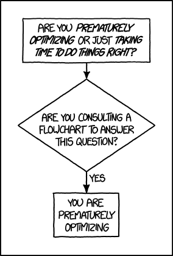
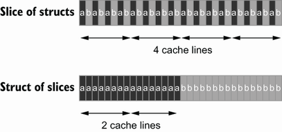
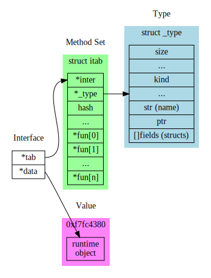
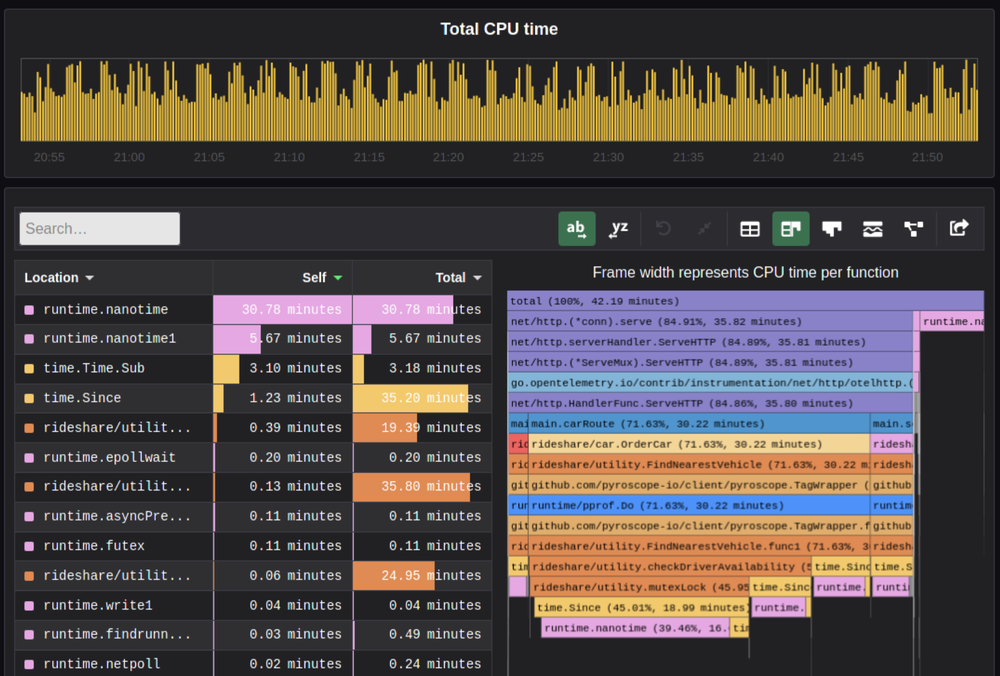

Intro
General intro and sideproject 🏠
Agenda
- Rant & Motivation
- Benchmarking Basics
- Complexity Theory
- Sideproject
What's that?
Who's that?
General idea:
- Maybe you heard of Moore's law? Computing power doubles every two years
- Andy and Bill's law: What Andy Grove (Intel ex-CEO) produces in Hardware speed, Bill Gates takes away.
- Wirt's law: Software gets slower more rapdidly than hardware gets faster.
- Lemur's law: Software engineers get twice as incompentent every decade (only half ironic) - seriously, as an engineering discipline we should be ashamed of how bad we performed over the last decades. We introduced so many layers of bad software and hacks that we depend on that we can't change anymore. It's like building a complete city on sand. Part of this because we don't really do engineerings and focus so much on providing company value that many of us did not even learn how good, performance optimized is supposed to look like. The costs of software engineers is more expensive than hardware these days, but this is short sighted. Investing in quality long term benefits us all. I hope to change your perspective a bit in this talk. We all lost the connection to the machine our programs run on and while the things in this talk were somewhat common knowledge 20 years ago (at least parts of it) it became somehow obscure knowledge over time and universities just focused on disciplines like web development and data science where you're not supposed to have this knowledge. Because you know, numpy and pandas does it for you. Or the browser will just do the right thing.
Performance inflation
NOTE: Exaggerated of course and I kinda see myself also in that meme. Programming got much easier now, but also much ...broader. Much more languages, frameworks, concepts that a programmer is expected to know. Still: In earlier days, programming required a much more thorough approach with more experimentation and there was no StackOverflow, AI, Auto complete or even documentation. Throwing more hardware at the problem was also no choice. Knowledge today is much more superficial than it was before. Mostly, because deep understanding of how a computer works is simply not required to produce something that works.
The thing is: Not requiring this kind of knowledge is a blessing and a curse at the same time. A blessing for our productivity, but in general a curse for the software we produce:
- In the 90s we still squeezed every byte of memory out of game consoles and did both amazing and scary optimizations to get basic functionality.
- And last decade we invented things like Electron, a lazy-ass way to make applications "portable" by just starting a browser for every application
- The main motivation of this workshop was actually being annoyed by things like Electron and I wanted that you guys do not invent something like Electron.
- If you think Electron is a good idea, then please stop doing anything related to software engineering.
- Maybe try gardening, or do waterboarding in Guantanamo. Just do something less hurtful to mankind than Electron
- Seriously take some pride as software engineerings and try to leave a solid legacy to the next generation of engineers.
- Understanding how a computer works helps to not be like Bill Gates and just eat up hardware advancements with worse software.
Also, this is the only meme. I promise.
No joke: This electron based terminal took 700M (!) of residual memory. This is absolutely insane and should not have been released.
You could argue now: Well, we would care more about performance but in todays world we don't have time to time because we're agile and have to produce feature after feature. We care only once we get into troubles. This also leads to developers never learning about writing software that has to fulfill some performance criterias.
There is some truth about that. Product management usually is not that much aware of Performance if it's not a hard product requirement. But that's your job - you're supposed to measure performance and predict that it will be an issue. If you think it will be an issue, then you should fight for the time to fix it.
Anyways, in this workshop we will enter a fantasy world, where we have infinite amounts of time.
»Simple«
# Read in a line, print the line without whitespaces. # Most complexity here is hidden. import sys print(sys.stdin.readline().strip())
Complexity is often hidden, without you noticing, often with the intent to "make things simple".
Simple can mean different things. "simple" can mean "small cognitive load", i.e. programs that are simple to understand. "simple" can also mean "programs with few instructions and few abstractions"
The prior rules assume that we're able to understand what's going on in our program. After all we have to judge what gets executed ultimately. Turns out, in interpreted language this is very hard.
Interpreted -> compiled to byte code. sys.stdin.readline are two dict lookups. memory allocations file I/O from stdin to stdout calling a c function (strip) several syscalls unicode conversion!
Inside Python 🐍
static PyObject * strip(PyObject *self, PyObject *args) { char *s = NULL; if (!PyArg_ParseTuple(args, "s", &s)) { return NULL; } /* ... actual "strip" logic here ... */ return PyUnicode_FromString(s); }
All functions eventuall call functions implemented in C:
And that happens for every function call in Python. Very often. All those objects are allocated on the heap. Python is easy, but the price you pay for it is high. This might give you a first feeling on how much stuff happens in a simple program.
Printing to stdout and drawing something on the screen is insanely complex too and beyond this workshop.
This slides could be also a talk about "Why interpreted languages suck"
Most optimizations will not work with python. As a language it's really disconnected from the HW - every single statement will cause 100s or 1000s of assembly instructions. Also there are no almost no guarantees how big e.g. arrays or other data structures will be and how they are layout in memory. You have to rely on your interpreter (and I count Java's JIT as one!) to be fast on modern hardware - most are not and that's why there's so much C libraries in python, making the whole packaging system a bloody mess.
Side note: There are also declarative languages like SQL (as compared to imperative languages like C) that this workshop is not focusing on. Working on performance there is indirect, i.e. achieved by tricks.
Workshop contents
We try to answer these questions:
- Why is performance important?
- How does the machine we program on work?
- How do we notice this as developers?
- Are there ways to exploit this machine?
Remember: Work shop.
Disclaimer:
- We're working from low level to slightly higher level here. Don't expect tips like "use this data structure to make stuff incredibly fast". I'll won't go over all possible performance tips for your language (there are better lists on the internet). I also won't go over a lot of data structures - what I do show is to show you how to choose a data structure.
- The talk is loosely tied to the hardware: General intro, cpu, mem, io, parallel programming
- Most code examples will be in Go and C, as most ideads require a compiled language.
- Interpreted languages like Python/Typescript might take away a few concepts, but to be honest, your language is fucked up and will never achieve solid performance.
- For Python you can at least put performance criticals into C libraries, for the blistering cestpool that web technology is... well, I guess your only hope is Webassembly.
- If you are unsure how a specific concept translates to your language: just ask. I might have no idea, but often there is only a limited choice of design decisions language designers can make.
- In this talk you will learn why people invent things Webassembly - even though it's kinda sad.
My main goal is though to give you a "table of contents" of most things related to performance. The whole thing is at least one semester of contents. We don't have enough time though, so we will jump a lot from topic to topic while barely scratching the surface. This should not matter too much though as long you just remember later "Ah, Lemur said something about this behavior, but I dont recall the details, let's Google" (or maybe even open those slides again). The hardest part of experience is that concepts exists. Applying them is often easier. If you manage to do that I will be fairly happy.
This also means that you don't need to worry if you don't understand something at first glance. Note it down or directly ask during the workshop, but try to follow th ecurrent slides instead of trying to understand every last detail.
What can you do with it?
go bench | μs/op | B/op | allocs/op | speedup |
|---|---|---|---|---|
sqlite3-Pop | 4.878 | 1.239.961 | 6.217 | 1x |
sqlite3-Push | 2.420 | 688.887 | 32.034 | 1x |
timeq-Pop | 35 | 232 | 4 | 136x |
timeq-Push | 61 | 98 | 3 | 39x |
OP = Push/Pop 2k Items with 40 Bytes each.
https://github.com/sahib/timeq
It may not look like it, but this was the slide I put the most work into.
I wrote a persistent priority queue in Go. It's kinda fast. At the end of the workshop you should be able to understand why it is fast and why it's designed that way. Maybe you can even improve it!
By the way, this doesn't mean that SQLite is bad. It's a general purpose database that was forced into being a priority queue. There are obviously some assumptions that allow better performance.
Was it worth it?
- Choosing SQLite is an absolutely sane decision.
- Building your own database probably not so much.
- Designing/testing a production-grade DB is hard.
- Handling edgecases & errors gracefully is even worse.
- It's 50x faster, but it took 50x the work.
- Still, you should know how, if you have to.
At time of writing, timeq has roughly 1.5k lines of code. The amount of testcode is about the same amount. However, SQLite has 173x times the amount of test code and is readily packaged.
What's not in here?
- An exhausting list of tips. You'd forget them.
- A full lecture on algorithm and data structures.
- A lecture you just have to listen to make it click.
- Language specific optimization techniques.
- Performance in distributed systems.
- Application specific performance tips (Networking, SQL, Marshalling, IPC ...)
Google: I mean that. After the workshop you know what to google for. Hopefully.
There are plenty free online courses and many books. I can't really recommend one, as my lecture in university is also already 10 years ago now.
Languages: includes C, Go, Python and a bit of Bash though. Most code examples are written with compiled languages in mind. Users of interpreted languages may find some things unintuitive.
Check that "interpreted" and "compiled" is a known distinction.
Help!
- This workshop is written in a markup language (.rst).
- Almost every slide has speaker notes.
- I tried to make them generally understandable.
- If you need more background, read them:
Experiments mandatory 🥼
You'll write your own cute database:
- You can group up or do it on our own.
- You can use your favourite language.
- You can always ask me outside or in the workshop about your progress and problems.
But do the database for yourself, not for me. Also, not every topic in the slides has to be present in your database. I'm only sharing general ideads here, not implementation tips. You don't have to remember all of them, but hopefully you will take away the core thoughts behind those ideads.
Also, please note that I'm not expert in everything myself. I do those workshops to educate myself on a certain topic. Also, I'm guilty of breaking most of the "tips" I give in this talk. That should not come as a surprise, as every rule is made to be broken. Most of the time for stupid reasons though.
This might serve as career tip though: If you want to deep dive into a certain topic, then prepare a presentation about it. If you're able to explain it to others, then you're probably kind of good in it.
So: this is also some kind of test for myself.
What is optimization?
Please define it in your words.
In computer science, optimization is the process of modifying a software system to make some aspect of it work more efficiently or use fewer resources. -- Wikipedia
The "fewer resources" is the more important bit. See yourself as tenant of resources like CPU, Mem, disk, network, dbs, ... that you share with other tenants of the same system. Be nice to other tenants, don't just make your own life pleasant.
When to optimize?
If performance requirements are not met and when doing so does not hurt other requirements.
Wait, there are such requirements?
Most of us do implicit requirements: Does it feel fast enough? So probably more often than you do now.
Other requirements: Maintenability and readability e.g. or correctness.
Questions to ask:
- On what kind of system the software will run on?
- How many requests will there be in parallel?
- What kind of latency is the user willing to accept? (Games, Websites, ATMs, ...)
- How much scaling is expected in the next time?
- How long can we do without? Do we need it now?
- Will my technology choice be a bottleneck? (Python, React, Electron, ...)
- Does EdgeCaseX need to perform well?
- Are the optimizations worth the risk/effort?
- ...
It's your job to figure out the performance requirements. Your PM will likely not be technical enough to set realisitc goals, so you need to discuss with him what kind of use cases you have and what kind of performance is acceptable for them (the latter is your part) Figure out possible edge cases together (i.e. pathological use cases bringing down your requirement) The engineer is the driver of the conversation, as he know's where the problems are.
Do some basic calculations based on these questions and add X to your goals. Those are your requirements.
When not to optimize?
Programmers waste enormous amounts of time thinking about, or worrying about, the speed of noncritical parts of their programs, and these attempts at efficiency actually have a strong negative impact when debugging and maintenance are considered. We should forget about small efficiencies, say about 97% of the time: premature optimization is the root of all evil. Yet we should not pass up our opportunities in that critical 3%.
I used the full quote here, since it's often abbreviated as "premature optimization is the root of all evil" which has a totally different meaning.
Many programmers just asked "how fast can it be?" and not "how fast should it be?" That's a fine question for personal learning but not for an actual product where time is a resource.
If you don't have a problem you really should not do anything. It is difficult to define what a "problem" is.
Electron apparently defined that it's not a problem if low-memory devices can't use their framework.
Huh, premature?
Reminder: It does not matter how fast you compute a wrong result.
Proof: There's a xkcd for everything.
The main point is: Take your time to do things the right away. Don't drop the pen when it worked for the first time and didn't feel slow, really take some to measure.
However, don't just blindly optimize things before you measured or optimize the small things after measuring.
Optimizations come at a price. It's usually more and harder code to maintain (and if not, why didn't you do it in the first place?) or they have some other disadavntages (an index in a database for example slows drown writes and needs space!). Is it worth the risk?
The mantra
- Make it correct.
- Make it beautiful.
- Make it fast.
In that order. Don't jump.
Often enough we do not even get to step 2 though. Sometimes not even step 1 :D Making things fast should always be a consideration. Software is not done once you are happy with the beautiful abstractions you found.
How do I measure?
In a reproducible environment.

Only ever compare apples with apples. Don't compare numbers between:
- Different machines.
- Different runs with different load on the same machine.
- Different inputs.
- Different implementations if they do not produce the same results.
Use benchmarks primarily to compare numbers of older benchmarks. And if you have to compare different implementations: Stay fair.
Profiling = Performance debugging. Benchmarking = Performance testing (i.e. ware optimizations still working?)
Example: Go
func BenchmarkFoo(b *testing.B) { possiblyExpensiveSetup() b.ResetTimer() for i := 0; i < b.N; i++ { functionUnderTest() } }
Example taken from here: https://www.p99conf.io/2023/08/16/how-to-write-accurate-benchmarks-in-go/
(it also has some good tips about many accidents that might happen, we'll see some of them later)
How to optimize?
- Do less work.
- Do the same work faster.
- Do the work at the same time.
- Do it in another order.
Examples:
- Use a different data structure (map vs btree)
- Do things like caching.
- threads, processes, coroutines.
- Do not wait for the longest part to finish to continue
Rules stolen from here: https://eblog.fly.dev/startfast.html
Measurement first
Requires a strong understanding of your program and experience.
- No way around measurements as first step.
- A certain level of experience helps.
- The model of your program in your head is different to what gets actually executed.
No short answer and no shortcuts to this. It will be a long journey and this is workshop will be only a step on the journey. Very many different languages, OS (Python, Go) and many different applications (SQL - 90%: just add an index) that cannot all be covered.
Example: If an application starts slow, then do you know what happens on startup? Maybe not - but it's important to take the right decisions.
Hot section
1 func process(b []byte) { 2 if(edgeCaseCondition) { 3 // ... 4 } 5 6 for i := 0; i < len(b); i++ { 7 for j := i; j < len(b); j++ { 8 b[i] = magicCalculation(b, i, j) 9 } 10 11 if i == len(b) - 1 { 12 for j := 0; j < len(b); j++ { 13 b[j] *= 2; 14 } 15 } 16 } 17 }
The Hot section is the path through your programs that is taken most often. This path defines the order in which you should optimize. If you optimize some edge case that is only taken 1% of the time, then the speedup of your optimization is also only worth 1%, because 99% of your program is still as slow as before.
How to find the path? Tools like pprof can find it, but also coverage tools or even debuggers can help you find them. Chances are that you the Hot section for your module anyways.
Other related terms are "Hot section" or "tight loop".
A related term is "slow path". This is often the path taken by a program that hits some edge case. Edge cases are often (purposefully) not optimized for, instead we generally optimize for the common "fast path".
A rule of thumb 👍
Go from big to small:
- Do the obvious implementation first.
- Check if your requirements are met.
- If not, find the biggest hot section.
- Optimize it and repeat from step 1.
- "obvious" depends a lot on experience. Example: Open a CSV file 10k times to extract a single row because you have a convenience function. Do not use this as excuse for bad software.
- If you don't have concrete functional/performance requirements, make some.
- We are incredible bad at guessing! Never ever skip this step!
- Never mix up this order.
Step 3 is the most difficult one. You should start measuring the full speed of your program then of one module and so on until you know what part consumes the most time/resources.
Theory: Complexity
- Algorithms/Structures can be divided in classes.
- General types are time and space complexity.
- Each divided in worst, best & average case.
- For datastructures specific operations are scored.
- Complexity classes are given in Big-O notation.
It's a bit like Pokemon for algorithms. "Merge sort, use worst case on quick sort!" "It's very effective!"
Good example (thanks Alex): https://sortvisualizer.com (compare quick sort and merge sort)
The general idea is to have a function that relates the number of elements given to an algorithm to the number of operations the algorithm has to do to produce a result.
Theory: Big-O Notation

https://www.bigocheatsheet.com
O(1) -> constant O(n) -> linear O(log n) -> logarithmic O(n * log n) -> sorting O(n ** x) -> polynomial O(x ** n) -> exponential O(n!) -> fucktorial (oops, typo)
Data structures and algorithms:
-> Some have better space / time complexity. -> Most have tradeoffs, only few are universally useful like arrays / hash tables -> Some are probalibisitic: i.e. they save you work or space at the expense of accuracy (bloom filters) -> Difference between O(log n) and O(1) is not important most of the time. (database developers might disagree here though)
For small n the difference doe snot mattern. It can be difficult to figure out what "n" is small.
Complexity exercises:
- Time complexity of Bubble Sort?
- Time complexity of Binary Search (worst & best)?
- Space complexity of Merge Sort versus Quick Sort?
- Removing an element from an Array vs a Linked List?
- Best/Worst case time complexity of Get/Set of Dicts?
- Space complexity of a Dict?
- O(n**2)
- O(log2 n) (both)
- O(n) vs O(1)
- O(n) vs O(1)
- O(1) and O(n) (but much more expensive than an array index)
- O(n)
Makes you wonder why you don't use hash maps all the time? Indeed they are a wonderful invention, but:
- get is still much more expensive than an array index.
- collisions can happen, making things inefficient.
- range queries and sorting are impossible.
- self balancing trees have O(log n) for get/set but are stable.
</Data structures lecture>

That's all. Go and remember a list of:
- Sorting algorithms (+ external sorting)
- Common & some specialized data structures.
- Typical algorithms like binary search.
- How much space common types use.
- Levenshtein, Graphs, Backtracking, ...
- ...whatever is of interest to you.
Data structures and algorithms is something you gonna have to learn yourself. Would totally go over the scope of this workshop and does not work as frontal lecture.
Do not ignore primitive algorithms like bubble sort. Remember: Fancy algorithms are slow when n is small, and n is usually small.
Performance metrics
Automated tests that assert the performance requirements of a piece of code by computing performance metrics and...
- ...either plot them for human consumption.
- ...compare against old versions.
- ...compare against constant thresholds.
Collect possible performance metrics (unit in parans):
- Execution time (time, cpu cycles)
- Latency (time)
- Throughput (IO, bytes/sec)
- Memory (allocations, peak, total bytes)
NOTE: Execution is heavily tied to hardware.
For CI/CD tools you can use something like this:
https://github.com/dandavison/chronologer
In an ideal world, performance requirements are tested just like normal functional requirements.
Challenges:
- Different machines that benchmarks run on.
- Only comparison between releases makes sense.
Makes sense only for big projects. Many projects have their own set of scripts to do this. I'm not aware of a standard solution.
Profiling
# Just the total time is already helpful. $ time <some-command> # Better: With statistics. $ hyperfine <some-command>
Profiling is usually used for finding a bottleneck. Basically a throw away benchmark, like a non-automated, manual test.
So most of the time the terms can be used interchangeably.
- Run several times.
- If the variance is not big, take the maximum.
- If the variance is rather large, use min...max.
Sideproject
What I cannot create, I do not understand.
Words don't cut it. To understand something you have to lay your hands on something and start exploring. Workshop is about tacit knowledge, you have to connect the little dots on my slides by working on this small slide project. I can only show you things, not understand and learn it for you.
tacit = unausgeprochen
I will share a sort of reference implementation some time after the workshop. There is no one right solution, but I will try to keep my solution well understandable and documented.
Memory only #1
type KV map[string][]byte func (kv *KV) Get(key string) []byte { return kv[key] } func (kv *KV) Set(key string, val []byte) { return kv[key] = val }
Memory only #2
func (kv *KV) sync() { var b bytes.Buffer for k, v := range kv { b.WriteString(fmt.Sprintf("%s=%s\n", k, v)) } return ioutil.WriteFile("/blah", b.Bytes(), 0644) } func load() *KV { data, err := ioutil.ReadFile("/blah") // ... parse file and assign to map ... return kv }
Obvious issue: It's all in the memory. If you need more entries than you have RAM you're in for a bad time.
You could use a big in-memory hash table and sync that to disk sometimes.
When do you call sync()? After every write? Inefficient. Less often? Then you will suffer data loss on power loss or crash.
Sounds impractical, but surprise: Redis actually works this way. They do not use a hash map internally though, but a tree structure as index. Oh, and they perform most work in a single thread. Still fast, but you have to consider its drawbacks.
Technical detail: Redis relies on the OS' paging mechanism, assuming that not every key in the database is used all the time. This allows to allocate a lot of memory, but to let the OS do the heavy lifting in the background to actually use a small portion of it only. This will be covered more in the memory chapter under "virtual memory".
Append only
init() { touch ./db } set() { printf "%s=%s\n" "$1" "$2" >> ./db } get() { grep "^$1=" ./db | tail -1 | cut -d= -f2- }
Simple append only write, get() reads only the last value. Every update of an existing key writes it again.
Terribly slow because get needs to scan the whole db, but very easy to implement and set is pretty fast. If you hardly ever call get then this might be a viable solution.
Indexed
type KV map[string]int64 func (kv *KV) Set(key string, val []byte) { // 1. Build entry with key and value. // 2. Append entry to end of db file. // 3. Update key-value index with offset. } func (kv *KV) Get(key string) []byte { // 1. Get offset & seek to it. // 2. Read value from db file at offset. }
This is actually already quite nice and I would be happy if you guys can implement it like that already.
This approach is called "log structured", because values are handled like a stream of logs, just timestamped (or offset stamped) data.
We can handle any number of values as long as we do not run out of memory. If we throw in a little caching, we could probably get decent performance. This would also be a decent usage for something called mmap which we will look into later in this series.
When loading the db file, we can reconstruct the index map easily.
Problems:
- There will be many duplicates if we update the same keys over and over.
- The database file will grow without bound. Might turn out problematic.
- There may only be one writer at a point (race condition between size of db and actual write).
Segmented
Solution:
- If the db file gets too big (> 32M), start a new one.
- Old one gets compacted in background (i.e. duplicates get removed)
- Index structure remembers what file we need to read.
The compaction step can be easily done in the background.
Open issues:
- We still need to have all keys in memory.
- Range queries are kinda impossible.
- We can't delete stuff.
TODO(FEEDBACK): Insert another step here to explain that we can replace the map ("memory segment") with a btree. Also explain roughly what a btree is.
Deletion

When we want to delete something, we just write a special value that denotes that this key was deleted. If a tombstone is the last value then the key is gone. Compaction can use it to clean up old traces of that value.
At this point we already build a key value store that is used out there: Bitcask.
Range queries

Change approach quite a bit:
- Keep a batch of key-value pairs in memory, but sorted by key.
- If batch gets too big, then swap to disk.
- Keep every 100th key in the offset index.
- If key not in index, go to file and scan the range.
This technique is called a Log-Structured-Merge tree (LSM).
"tree" because usually a tree is used instead of a hash table for easy handling, but this is not strictly necessary and the main point of the concept.
Since the index can be "sparse" (not all keys need to be stored), we have very fine grained control over memory usage. Worst thing is a bit of extra scanning in the file.
Open problems:
- Get on non-existing keys.
- Crash safety
WAL 🐋
What if a crash occurs before things get written to disk?
We have to use a WAL like above! On a crash we can reconstruct the memory index from it. Postgres and many other databases make use of this technique too.
Fynn!
🏁
I left quite some details out, but that's something you should be able to figure out.
CPU
The secrets of the computer 🧠
Agenda
- How to get from source to machine code?
- How does the CPU execute machine code?
- What performance effects does this have?
- Profiling & Benchmarking thoughts & tips
Quiz
- If two CPUs have the same frequency, can we make assumptions on their speed?
- If two programs A and B execute the same number of machine instructions will they have roughly the same runtime?
Those are the questions we will be looking into in detail today. Here's the TL;DR:
- Answer no. Every instruction can take a different amount of cpu cycles. Every instruction can do a lot of different work (SIMD vs normal)
- Also no. Speed of a CPU largely relies on many many factors (#core, cache size, ...) The frequency also did not increase much over the years since CPUs get manufactured much smaller, causing heat issues with higher freqs.
Compilers

Steps to compile something:
- Lexer/Tokenizer (break code in tokens)
- Parser (build AST from code)
- High Level IR (build generic language from it)
- Low level IR (optimize and make it suitable for machines)
- Convert to actual target machine code
Fun fact: Supercompilers

- Compilers do not usually produce the best code and rely heavily on pattern matching, heuristics and just being smart. They can miss room for optimizations although this is rather rare in practice. (except Go, which is just a developing compiler)
- Super compilers brute force compilation (sometimes with benchmarks) until they found the best performing piece of code.
- Not used in practice, since freaking slow but helpful for developing new compiler optimizations.
As you will see in the rest of the workshop, 70% of optimization is to help the compiler make the right decisions.
How is code executed?

- Assembly: 1:1 human readable interpretation of machine code.
- Machine code: machine readable instructions (each instruction has an id)
- Assembler: Program that converts assembly to machine code.
Other terminology
- ISA: Instruction Set Architecture (x86, arm, ...)
- CISC Complex Instruction Set Computer (x86)
- RISC: Reduced Instruction Set Computer (arm)
- SIMD: Single Instruction, Multiple Data
- ISE: Instruction Set Extensions (AVX, AES, SSE...)
- Micro{architecture,code} (Pentium3, Alder Lake, Zen...)
Example of a CISC instruction set: x86 Today, most complex operations get translated to RISC code though by the CPU. CISC turned out to be slower, surprisingly.
RISC: ARM. Usually cheaper to build and also faster.
Microarchitecture: Implementation of a certain ISA.
ISE (Instruction Set Extensions) are not directly available in Go, only if the compiler decides to use them.
How is machine code stored?
As ELF (Executable and Linkable Format)
$ readelf --sections /usr/bin/ls [...] [12] .text PROGBITS [...] [22] .data PROGBITS $ objdump --disassemble /usr/bin/ls
Beside storing the actual instructions ELF solves:
- Storing debugging info
- Making it possible to link with existing other libraries.
- Includes a text (code) and data section (pre-initialized variables)
- Different OS use different formats, but ELF is probably the most relevant for you and also the most widely known. Windows has a different one.
Go Assembler #1
1 package main 2 3 //go:noinline 4 func add(a, b int) int { 5 return a + b 6 } 7 8 func main() { 9 add(2, 3) 10 }
The official Go compiler is not based on LLVM or GCC. However, it also uses a IR which it calls "Go assembler". It's basically an assembler like dialect for a fantasy CPU. After it was optimized, it gets translated to actual target machine code.
Go Assembler #2
$ go build -gcflags="-S" add.go [...] main.add STEXT nosplit size=4 [...] (test.go:4) TEXT main.add(SB), [...] (test.go:4) PCDATA $3, $1 (test.go:5) ADDQ BX, AX (test.go:5) RET [...] main.main STEXT size=121 [...] [...] (test.go:9) MOVL $2, AX (test.go:9) MOVL $3, BX (test.go:9) CALL main.add(SB) # result is in AX
Important: There are many assembler dialects for many ISA. This is a IR. Also Important: Explain registers!
Can we just say: To make things faster you have to reduce the number of instructions?
Sadly no. Modern CPUs are MUCH complexer than machines that sequentially execute instructions. They take all kind of shortcuts to execute things faster - most of the time. See also: Megaherz myth (-> higher clock = more cycles per time)
Effects that may play a role
- Not every instruction takes the same amount of cycles (AND = 1 cycle, MOV = 1-6+)
- Pipelining
- Superscalar Execution
- Branch prediction / Cache prefetching
- Out-of-order execution
- Cache misses (fetching from main memory)
List of typical cycles per instructions ("latency"): https://www.agner.org/optimize/instruction_tables.pdf
Von-Neumann Architecture

Von Neumann Computer: Memory contains data and code. CPU adresses memory as whole and can address I/O device the same way over a bus system.
Greatly simplified.
- Clocked with a certain frequency.
- A cycle is the basic work synchronization.
- Registers for internal usage. (CPUs have more than x86 says)
- Peripherals look to the CPU like memory.
Intel 8086 kinda worked this way.
Single instruction pipeline

- Load: Instruction gets loaded (0x012345)
- Decode: Check type/args of instruction.
- Memory: Load data from memory (if necessary)
- Execute: Calculate (e.g. add 2+3 in the ALU)
- Write back: Save result in some register.
The location of the next instruction is stored in the PC register. (program counter)
This would need 5 cycles per instruction. You kinda assumed, that one cycle is one instruction, did you?
Pipelining, OoO, Superscalar, wtf?
- Pipelining: The 5 steps get done in parallel.
- Out-of-Order: Instructions get re-ordered.
- Superscalar: Several instructions per cycle (~5x)
Ergo:
- 1 Cycle ≠ 1 instruction.
- CPU might do unnecessary work!
- Reducing instructions alone does not get us far.
- Every instruction needs to do all 5 steps
- Modern CPUs can work on many instructions at the same time
- They can be also re-ordered by the CPU! (think of a queue that gets reordered)
- This can lead to issues when an instruction depends on results of another instructions! (branches!)
- It can even happen that we do unncessary work! This made the SPECTRE and MELTDOWN security issues possible that made cloud computing 20% slower "over night" (well, it got better after a few months)
- CPUs can also execute more than one instruction per cycle (e.g. one MOV, ADD, CMP, as they all use different parts of the CPU) (Superscalar CPUs)
- This is the reason why focussing on reducing the number of instructions alone is not too helpful when optimizing.
Disclaimer: CPU effects
- Modern CPUs are insanely complex (like humans).
- Compilers are insanely smart (unlike humans).
- This tandem is probably smarter than you and me. The following slides are mostly for educational purpose. Trust the compiler in 95% of the time.
- Still helpful to know what happens in the 5%.
Branch prediction
// NOTE: works only in C/C++ if(likely(a > 1)) { // ... } // Branch mis-prediction are very costly! // ~20 - ~35 cycles can be lost per miss. if(unlikely(err > 0)) { // ... }
Modern cpus guess what branch is taken due to pipelining. The accuracy is done to 96%, they even use neural networks for that. Branch mispredictions are costly: Roughly 10-30 cycles lost.
No likely() in Go, compiler tries to insert those hints automayically. Not much of an important optimization nowadays though as CPUs get a lot better:
https://de.wikipedia.org/wiki/Sprungvorhersage
(but can be relevant for very hot paths on cheap ARM cpus)
Penalty Source: https://users.elis.ugent.be/~leeckhou/papers/ispass06-eyerman.pdf
Can we observe it?
// Which loop runs faster? for(int i = 0; i < N; i++) { if (unsorted[i] < X) { sum += unsorted[i]; } } for(int i = 0; i < N; i++) { if (sorted[i] < X) { sum += sorted[i]; } }
Example: code/branchpredict
Effect is unnotice-able if optimizations are enabled. Why? Compilers can make the inner branch a branchless statement.
Profile Guided Optimization

Idea:
- Let program run in analysis mode.
- Capture data about what branches were hit how often.
- Use this data on the next compile to decide which branch is likely!
Feature is available as part of Go 1.20 and since around 20 years as part of GCC/clang
Also decides on where to inline functions.
https://tip.golang.org/doc/pgo
Old news for languages like C.
Branchless programming
// Don't optimize this at home, kids. // Your compiler does this for you. uint32_t max(uint32_t a, uint32_t b) { if(a > b) { return a; } return b; }
// variant 1; not possible in Go: return (a > b) * a + !(a > b) * b; // variant 2; possible in Go: return a - (a - b)
Not relevant, as the compiler will optimize this for you in most cases by using branchless code.
It can be however a life safer in hot loops if the compiler does not know. Always check the assembly output if unsure.
Loop unrolling and ILP
ILP = Instruction Level Parallelism
// a loop is just a repeated if condition: for idx := 0; idx < 3; idx++ { sum += sin(idx) } // same, but no "idx < 3" needed: // (can be computed in parallel!) sum += sin(0) sum += sin(1) sum += sin(2)
- A for loop is just a repeated branch condition.
- Compilers unroll simple loops.
- If they don't hand unrolling can be useful (very seldom!)
Example with interdependent code will not work as good:
v := 1234 for v > 0 { digit := v % 10 v /= 10 }
Just use less instructions?
// How to reduce the number of instructions? char *memcpy_basic(char *dst, char *src, size_t n) { for(size_t i = 0; i < n; i++) { dst[i] = src[i]; } return dst; }
Example: code/memcpy
-> Problem: von-Neumann-Bottleneck. -> CPU can work on data faster than typical RAM can deliver it. -> Workaround: Caches in the CPU, Prefetching. -> Actual solution: Data oriented design. -> Sequential access, tight packing of data, SIMD (and if you're crazy: DMA) -> Still best way to speed up copies: don't copy.
Object oriented design tends to fuck this up and many Games (at their core) do not use OOP. You can use both at the same time though!
SIMD

https://github.com/mmcloughlin/avo
SISD = Single Instruction / Single Data SIMD = Single Instruction / Multiple Data
Can be really worth the effort, since compilers can't figure out all cases where SIMD can be used.
Example use cases:
- Image computation (i.e. changing brightness of several pixels at once)
- Math operations like vector / matrix multiplications.
- Audio/DSP processing.
Disadvantage: Code gets ugly, hard to maintain and has additional obstacles to solve like memory alignment. Also freaking complicated, which is why we won't go into detail. Read up more here if you really want to:
https://en.wikipedia.org/wiki/Single_instruction,_multiple_data
Optimization: Inlining
Inlining functions can speed up things at the cost of increased ELF size.
Advantage: Parameters do not need to get copied, but CPU can re-use whatever is in the registers alreadys. Also return values do not need to be copied.
Only done for small functions and only in hot paths.
I like to MOV, MOV it
# General syntax: # MOV <dst>,<src> # Possible: MOV reg1, 1234 MOV reg1, reg2 MOV reg1, [1234] MOV [1234], reg1 MOV [reg2], reg1 # Not possible: MOV [1234], [4321]
How does access to main memory work? By using the MOV instruction. And MOV from main memory is very costly: Access to main memory is 125ns, L1 cache is ~1ns
Fun fact: MOV alone is Turing complete: https://github.com/xoreaxeaxeax/movfuscator
TODO: Move this slide a bit before cache lines?
von Neumann Bottleneck

von Neumann Architektur:
- Computer Architecture where there is common memory accessible by all cores
- Memory contains Data as well as code instructions
- All data/code goes over a common bus
- Pretty much all computer nowadays are build this way
Bottleneck: Memory acess is much slower than CPUs can process the data.
Just add some caches!

Good example of our industry really.
Instead of fixing an issue we wrap layers aorund it until we just don't see the problem. But we never fix it.
L1, L2, L3

Cache lines (64B)
Minimal line size is 64 byte! It can only be written and evicted as one. No partial reads or writes possible. (Reason: adress space would be too big otherwise)
Some platforms have different cache lines and future CPUs might change too. So instead on relying on the magic 64 you should use some const or cpu.CacheLinePad.
Caches misses
Example: code/counter
# Use this to check your cache miss count: $ perf stat -p <PID>
https://access.redhat.com/documentation/en-us/red_hat_enterprise_linux/8/html/monitoring_and_managing_system_status_and_performance/getting-started-with-perf_monitoring-and-managing-system-status-and-performance https://access.redhat.com/documentation/en-us/red_hat_enterprise_linux/8/html/monitoring_and_managing_system_status_and_performance/overview-of-performance-monitoring-options_monitoring-and-managing-system-status-and-performance
(Struct) size matters!
// Quiz: How big is this struct? type XXX struct { A int64 B uint32 C byte D bool E string F []byte G map[string]int64 H interface{} I int }
What's padding?
x := XXX{} // measured with Go 1.20! s := unsafe.Sizeof // println(s(x.A)) // 8 int64 println(s(x.B)) // 4 uint32 println(s(x.C)) // 1 byte println(s(x.D)) // 1 bool // +2 padding println(s(x.E)) // 16 string (ptr+len) println(s(x.F)) // 24 slice (ptr+len+cap) println(s(x.G)) // 8 map (ptr) println(s(x.H)) // 16 iface (ptr+typ) println(s(x.I)) // 8 int // Sum: 86 println(s(x)) // 88 (not 86!)
If a struct is bigger than a cache line, then accessing .A and .I would cause the CPU to always require to get a new cache line!
Keep your structures under 64 bytes at max. Even less is better, aim to stay under 32 byte.
Some more background info regarding why the value needs to be padded can be found here (i.e. instructions require proper alignment):
var data [100]XXX for _, elem := range data { // 100 cache misses (at least)! fmt.Println(elem.A, elem.I) }
# How big is a cache line? $ lscpu --caches
Good article with a slightly different (and more realworld) example:
https://www.ardanlabs.com/blog/2023/07/getting-friendly-with-cpu-caches.html
(Binary) size matters!
- More debug symbols, functions, lookup tables and instructions make the binary bigger.
- A process needs at least as much memory as the binary size (Caveat: only the first one)
- The bigger the binary, the longer the startup time. Important for shortlived processes/bootup (scripts!)
- CPUs have separate caches for code instructions. If your program is so fat that that the caches get evicted while jumping between two functions, then you pay with performance.
»Yo binary is so fat, you see it on Google Earth! 🌍«
Binaries can be compressed with UPX, but that does make start up time faster - contrary to that.
Also, in the embedded world the binary size is way more important, but 30M binaries seem excessive even on servers. Go is doing a bad job here while Rust produces tiny outputs.
perf
# Like `time` but much better. $ perf stat -a <command> $ perf stat -a -p <PID> # See where the system spends time now: $ perf top # Detailed report about memory access / misses $ perf mem record -a ./counter atomic $ perf mem -t load report --sort=mem # Can find false sharing (see next chapter) $ perf c2c
pprof

# simple: $ go test -v -cpuprofile=cpu.pprof -memprofile=mem.pprof $ go tool pprof ./cpu.pprof
// permanently: import _ "net/http/pprof" go http.ListenAndServe("localhost:3000", nil)
$ go tool pprof localhost:3000/debug/pprof/profile $ go tool pprof localhost:3000/debug/pprof/heap
Profile of firmware's analytics service
{kind=link}
Look at images/dashboard_pprof.svg here.
Pprof is also available for Python, but not as well integrated: https://github.com/timpalpant/pypprof
Flame graphs
f, _ := os.Create("/tmp/cpu.pprof") pprof.StartCPUProfile(f) defer pprof.StopCPUProfile()
$ go tool pprof -http=":8000" <binary> /tmp/cpu.prof
Alternative for short lived programs: make pprof record a profile.
See images/brig_flamegraph.png See images/brig_flamegraph.html
Perfect to see what time is spend in in what symbol. Available for:
- CPU
- Memory Allocations (although I like pprof more here)
- Off-CPU (i.e. I/O)
False sharing
- Problem: Unrelated data in the same cache line gets modified and thus cache line gets evicted.
- Solution: Add some padding!
Example code/counter (4)
If a program modifies data, the responding cache line needs to be evicted (unless the modification resulted from the currently running program). This is called "cache eviction" in short.
If it happens because the data in the cache line was actually changed, then all is good. Data needs to be fetched again from memory which costs a bit of time.
But what if two data points just happen to be in the same cache line? Imagine two int64 counters that get incremented by two separate threads. They do not talk to each other and should be influenced by each other. However, each increment evicts the cache line and causes a slowdown. We can use padding to force each counter into a separate cache line.
True sharing
- Situation: Closely related data lands in the same cache line.
- Effect: Less jumping, less memory loads, higher throughput.
- Trick: Structs < 64 byte and being cache friendly.
Example: code/striding
This is when the idea of introducing caches between CPU and memory works out. Good news: Can be controlled by:
- Limiting struct sizes to 64 bytes
- Grouping often accessed data together. (arrays of data, not array of structs of data)
A bad example of this are linked lists. The next node is usually somewhere else in memory and the size of a single node is below 64 bytes. This results in cache lines that are mostly loaded for no reason. One solution would be to design cache-friendly linked list by packing more data into the node itself.
Typical Access patterns
Learning: Group data in a CPU friendly way. Prefer Struct of Arrays over Array of Structs if you require a performance boost.
AoS vs SoA
var AoS []struct{ // ArrayOfStructures A int B int } var SoA struct{ // StructureOfArrays A []int B []int }
Dataoriented programming
The science of designing programs in a CPU friendly way.

DOP is often mentioned as contrast to OOP, but both concepts can complement each other.
Object oriented program is designing the program in a way that is friendly to humans.
It does by encapsulating data and methods together. By coincidence, this is not exactly helpful to the machine your program runs on. Why?
- global state (i.e. impure functions) make branch/cache predictions way harder.
- hurts cache locality.
Quiz: Matrix Traversal
int *m = malloc(N_ROWS * N_COLS * sizeof(int));
Example: code/matrix
What is faster? Traversing m...
- ...row by row?
- ...column by column?
Good picture source: https://medium.com/mirum-budapest/introduction-to-data-oriented-programming-85b51b99572d
Recursion vs Iteration
- Recursion is elegant but can be expensive.
- Make the recursive call the last thing in your function.
- (»Tailcall optimization«)
BenchmarkSum/normal 286.7 ns/op BenchmarkSum/tailcall 242.1 ns/op BenchmarkSum/iterative 71.1 ns/op
Example: code/tailcall
Recursive algorithms like quicksort or merge sort are relatively elegant when writing as recursive function. Sadly, this results in some performance impact.
Why? Because function call have a certain overhead, as we will see in the next chapter. This function overhead can be reduced if we place the recursive function call at the end of the function. This allows a smart compiler to save some instructions. An even smarter compiler (clang or gcc) might even able to convert the recursion function into its iterative equivalent.
This is called "Tail call optimization": https://de.wikipedia.org/wiki/Endrekursion
Virtual funcs & Interfaces
Example: code/cost_of_interface
Interface calls have between 2x to 10x as much overhead as direct calls in Go.
Interfaces also have a space cost. A variable of type interface is basically a pointer with 16 byte (Space!). It consists of two actual pointers: type (pointing to a struct describing the type for reflection) and a pointer to the actual data the interface points to. This is one indirection more, one more cycle for the GC.
Also, interfaces are opaque to the compiler. It cannot reason about what they could do, so they can not use inlining or do proper escape analysis and instead allocate on the heap always.
More info: https://syslog.ravelin.com/go-interfaces-but-at-what-cost-961e0f58a07b
Now you could say: Ah, I don't use Go, all good. Well, pretty much all languages that support OOP are affected by this kind of behaviour. Virtual methods in C++ or Java have their price too: They need to lookup a vtable, which adds some more instructions but most importantly hinders the compiler to optimize further.
Since especially Java uses Getters and Setters a lot - which are just one-line functions in most cases - they pay quite a penalty regarding performance.
Python is especially wild, since they just might do tons of dictionary lookups if you use classes with a lot of inheritance.
Boundcheck Elimination
Help the compiler!
Example: code/boundscheck
In a memory-safe language all access to slices are checked (and if out-of-bound, an language panic/exception is produced)
This is a very small price to pay for the safety, but it costs a few instructions.
More infos can be found here: https://go101.org/article/bounds-check-elimination.html
Process scheduler
Context switch:
- Before execution: Load register state from RAM.
- After execution: Store register state in RAM.

We're not alone on a system. Every process get assigned a share of time that it may execute.
-> Expensive. Switching too often is expensive.
- scheduler types (O(n), O(1), CFS, BFS)
- scheduler is determined at compile time.
- there are some knobs to tune the scheduler, but not that interesting.
- Show process states with ps a.
Process load
Load: Count of processes currently in running or waiting state.
\(load_{now} = \begin{cases}N_{count} = 0\:\:\:\:\:\:\:\:\:\iff\textrm{Idle}\\N_{count} < N_{cores}\iff\textrm{Normal}\\N_{count}\ge N_{cores}\iff\textrm{Overload}\end{cases}\)
The load metric makes most sense if averaged over some time.
Those are the load5/load10/load15 params. Use load5 for graphs, load15 for quick judgmenet.
You can use the "uptime" command to check the load.
Process niceness
Niceness is the scheduling priority.
- Ranges from \(-20\) to \(+19\); \(0\) is default.
- \(-20\) gives the process more time to execute.
- \(+19\) gives the process way less to execute.
# for new processes: sleep with high prio $ nice -n -20 sleep 5s # for running processes: change to unimportant $ renice -n +19 $(pgrep docker)
Disclaimer: Exact behaviour depends on scheduler (scheduling frequency vs time slice size)
Rough Rules to take away
- Watch out for cache misses.
- Keep your structs small (< 64B).
- Check if you need padding (false sharing).
- Place commonly accessed data close (true sharing).
- Design your access patterns cache friendly.
- Avoid virtual methods and inheritance.
- Do not overuse pointers over values.
- Trust your compiler, but check what it did.
- Use SIMD if you have to; or leave it to others.
Go even warns about too structures (if they are used as values): gocritic hugeParam: cfg is heavy (240 bytes); consider passing it by pointer
A good and very quick summary is also in this article (although you need background info to understand the tips):
https://medium.com/scum-gazeta/golang-simple-optimization-notes-70bc64673980
Fynn!
🏁
Memory
Bookkeeping is hard 📝
Most stuff in this session is related to this PDF:
Agenda
- How does memory work as hardware?
- How does Linux manage memory?
- How can we measure & profile memory usage?
- How can we allocate less and faser?

RAMa Lama Ding Dong 🎺
- RAM = Random Access Memory
- Huge, sequential line of individual memory cells.
- Usually can only be addressed in 4K pages.
- Memory controller that handles the actual interaction between Bus and CPU.
Two major types in use today:
- Static RAM (SRAM)
- Dynamic RAM (DRAM)
SDRAM = Synchronous DRAM
DDR-SDRAM = Double Data Rate SDRAM
(and DDR2 doubles that and so on)
DRAM - one bit, please

Dynamic sounds good, doesn't it? Well, it isn't...
Pros:
- Very simple and cheap to produce.
- High density (many cells per area)
Cons:
- Needs to be refreshed constantly (64ns or so)
- Makes logic in controller way more complicated.
- Relatively slow.
- Enables security issues like ROWHAMMER.
SRAM - one bit, please

- Very fast. (10x or more)
- Used in L1/L2/L3 caches in the CPU.
- No refresh required.
- Low power consumption
- Expensive, not so high density
Why use DRAM at all?
- Because it's cheap, and we need tons of it.
- Main memory is all DRAM.
- Caches (L1-L3) are SRAM.
- A lightbulb is maybe OSRAM (Sorry.) 💡
So basically...
again, hardware is at fault and instead of fixing it with some Pfiffikus we software devs have to cope with slow main memory.
ROWHAMMER 🔨
Fun fact: DRAM enables a hardware-based security attack: ROWHAMMER. Changing a row of DRAM cells can, if done very often, switch a nearby row. This can be used to change data like "userIsLoggedIn".
ECC Memory
- Radiation or damage can flip bits
- ECC RAM protects against such errors.
- Use of parity bits or Hamming code.
- Slightly slower than normal RAM.

ECC comes with a price & performance tag.
NUMA - multiple CPUs
NUMA = Non Uniform Memory Architecture
Is the access to all memory equally fast?
- Not if you have more than one CPU!
- Every CPU gets 1/nth of the memory.
- Every CPU can access the complete memory.
- Non-local access is costly.
NUMA is a term you might come across.
Linux is NUMA capable and that's why it's such a popular server and superomputer operating system. Or one of the reasons at least.
How is memory managed?
The large sequential slab of memory needs to be distributed to all programs that require it.
- Usage is not known in advance.
- programs need to allocate based on their need.
- OS needs to make memory allocations inexpensive
Understandin how the kernel and processes manage their memory makes it possible to use less of it and make more efficient use of it.
For this we need to start at the basics...
Inside a process
- Each process may allocate certain amounts of memory on-demand.
- Memory inside the process can be managed in three ways: Data, Stack, Heap.
- Data: Readonly data known at compile time.
- Stack: For short-lived memory & automatic.
- Heap: For long-lived memory & manual.
The stack: Growth
func recursive(depth int) { if depth <= 0 { return } var a int fmt.Printf("%p\n", &a) recursive(depth - 1) } // ... recursive(10) // Output: 0xc000070e70 -> diff: 80 bytes due to: 0xc000070e20 -> stack pointer, frame pointer 0xc000070dd0 -> registers, params, local vars ...
More details on calling a function:
https://eli.thegreenplace.net/2011/09/06/stack-frame-layout-on-x86-64
Stack grow direction: Depends on OS / your programming language.
The stack: LIFO Layout

Every function calls causes a so called "frame" to be placed on top of the stack. Each frame contains parameters, local variables, but also a return link to the previous frame.
The program knows in which frame we are by looking at a thing called "base pointer". A special pointer kept in a fixed register and changed on each function call. There's also a pointer that points to the current end of the stack, so using this we know how big a frame is. When a function returns we can simply change those two registers using the "return link". The current stack frame is then deallocated and will be overwritten when another function is called.
Malicious software sometimes is able to overwrite the return link to somewhere else, e.g. using a buffer overflow. This leads the program to execute some other other data as code, potentially doing evil things.
Registers:
ebp: Base pointer. Points to start of function. Cell at adress contains "return link to last function" (i.e. pointer to instruction offset) esp: Initially the base pointer, but grows with each variable put on the stack. eip: Pointer that points to current instruction (not on the stack, but your code is somewhere else in memory)
Stack origin: ebp. Stack pointer: esp.
https://en.wikipedia.org/wiki/Stack-based_memory_allocation
Good explanation here too: https://people.cs.rutgers.edu/~pxk/419/notes/frames.html
The stack: Overflow
Why not use the Stack for everything?
- Stack size is limited to 8MB (default on Linux).
- Memory is bound to your call hierarchy.
- The memory lives only until your function returns.
- Stack is per-thread, sharing requires heap.
- 1: Reason for this are security mostly. Recursion happens on the stack, so
endless recursive programs cannot break everything. Also running over the extents of a buffer in C (Security issue!) will overwrite parts of the stack, so limiting it makes sense.
- Stack is a LIFO. You cannot free objects down in the stack without freeing everything in between.
- Every thread (and in Go every goroutine) has their own stack.
Example: code/stackoverflow
The stack: Summary
- ...cleaned up automatically on return.
- ...bound to a function call.
- ...low overhead and should be preferred.
- ...can be reasoned about during compile time.
- ...good for small amounts of data.
The Heap: Allocations
//go:noinline func f() *int { v := 3 return &v } func main() { // Two for the stack: // a=0xc00009aef8 b=0xc00009aef0 a, b := 23, 42 // Two for the heap: // c=0xc0000b2000 d=0xc0000b2008 c, d := f(), f() }
Contrary to the stack, the memory is not bound to the function and therefore will survive the return of a function. The downside is that the memory needs to be freed
Languages like Go allocate automatically on the heap if they have to - they do this either when the compiler cannot prove that the value does not escape the function stack or when the allocation is too big for the stack. More on this later. Thanks to the GC memory is freed automatically after it's used. Having a GC is often understood as "I don't need to think about memory" though, which is not the case. You can help the GC to run faster and avoid memory leaks that can arise through edge cases.
Languages like Python allocate everything on the heap. They almost never use stack based memory for anything. Most interpreted languages use a combination of reference counting and garbage collection. Very convenient but also the slowest way to go.
Languages like C (and partly Rust) pass the duty of memory management to the programmer. While this make it possible to be clever, it also opens up ways to fuck up tremendously by creating memory leaks, double frees, forgotten allocations or use-after-free scenarios.
Heap memory must be cleaned up after use. Go does this with a GC.
The Heap: malloc()
int *ptrs[100]; for(int i = 0; i < 100; i++) { ptrs[i] = malloc(i * sizeof(int)); } // ... use memory ... for(int i = 0; i < 100; i++) { free(ptrs[i]); }
malloc() is a function that returns N bytes of memory, if available. It uses a syscall of the kernel (sbrk()), but most of the logic is a library in userspace.
malloc() manages internally a pool of memory internally, from which it slices of the requested portions. Whenever the pool runs out of fresh memory, the malloc implementation will ask the kernel for a new chunk of memory. The exact mechanism is either over sbrk(2) or mmap() (we will see mmap later)
As malloc() needs to cater objects of many different sizes (as seen in the example above) it is prone to fragmentation.
malloc() can fail! Originally it was supposed to fail if there is no memory left, but on Linux there is "infinite" virtual memory and overcommitting (we come to those later), which is why it does not fail for this reasons. It will fail however if you ask it a too large block, have some memory restrictions on your processes (cgroups) or other administration reasons.
The Heap: Freelist

As mentioned above, the memory allocated from the pool needs to be freed, so it can be re-used. This is done by the free() call.
malloc() needs to track which parts of its pool are in-use and which can be issued on the next call. It does by the use of free-lists. Each block returned by malloc() has a small header (violet) that points to the next block. The memory returned by malloc() is just behind this small header.
Once allocated, a free block is taken out of the list and added to the "allocated" list. This means that every allocation has a small space and time overhead.
On free(), the opposite happens: The block is put back into the freelist and out of the "allocated" list. (i.e. an allocation is O(log n), instead of O(1) as with the stack)
It is interesting to note that there are different implementations of this, with different advantages and drawbacks. One very high performant implementatin is jemalloc.
Useful Links:
- https://azeria-labs.com/heap-exploitation-part-1-understanding-the-glibc-heap-implementation (More details)
- https://sourceware.org/git/?p=glibc.git;a=blob;f=malloc/malloc.c;h=05e65a2d54f9b3850fa0c4d2c7dfaae3dfd94dac;hb=HEAD#l54
- https://sourceware.org/git/?p=glibc.git;a=blob;f=malloc/malloc.c;h=05e65a2d54f9b3850fa0c4d2c7dfaae3dfd94dac;hb=HEAD#l102:
The Heap: Leaks
// In C: char *s; s = malloc(20); s = malloc(30); // leak: 20 bytes.
// In Go: var m map[string][]byte{} func f(v int) { // the slice will be still referenced after // the function returned, if not delete()'d m["blub"] = make([]byte, 100) return v * v }
Other sources of memory leaks:
- Go routines blocking forever.
- Assigning a small slice of a big array to a variable (causing the whole array to be still referenced)
Use pprof to find memory leaks in Go.
In C it's very easy to forget a free(), therefore quite some impressive tooling developed over the years. The most prominent example is valgrind: https://valgrind.org
Python: Also has memory leaks, finding them is much harder since the tooling is not great (at least when I looked last time). Also: Memory leaks can happen on the C-side or in the python code itself. If they happen in a C-module you're pretty much fuc.. lost.
The Heap: Summary
Heap
- ...needs to be explicitly requested.
- ...needs to be explititly cleaned up.
- ...can be used until freed. Will crash otherwise.
- ...required for big data chunks or long-lived data.
- ...has a small, but noticeable, overhead.
Heap requires some implementation of malloc(). There are many different implementations of it in C, using different strategies to perform well under certain load. Choosing the right kind of allocator is a science in itself. More info can be obtained here:
https://en.wikipedia.org/wiki/Memory_management#Implementations
In languages like Go you don't have a choice which memory allocator you get. The Go runtime provides one for you. This makes sense as it is coupled very tightly with the garbage collector. Go uses a similar implementation, but is more sophisticated. Main difference: it keeps pre-allocated arenas for differently sized objects. i.e. 4, 8, 16, 32, 64 and so on.
The grow direction of the heap and stack is not really important and you should keep in mind that every thread/goroutine has their own stack and there might be even more than one heap area, possibly backed by different malloc() implementations.
Ways to optimize
- Allocate less bytes.
- Allocate less often.
- Prefer cheap stack over heap, if possible.
- Make the life of your GC easier.
Garbage collector (GC)

GC is a utility that remembers allocation and scans the memory used by the program for referenes to the allocations. If no references are found it automatically cleans up the associated memory.
This is very ergonomic for the programmer, but comes with a peformance impact. The GC needs to run regularly and has, at least for a very small amount of time, stop the execution of the program.
Good reference for the Go GC: https://tip.golang.org/doc/gc-guide
GC: Pressure
// Prefer this... m := make(map[string]someStruct) // ...over this: m := make(map[string]*someStruct)
Example: code/allocs
# counting words with a map: $ go test -v -bench=. -benchmem noptr 577.7 ns/op 336 B/op 2 allocs/op ptr 761.4 ns/op 384 B/op 10 allocs/op
"GC Pressure" describes the amount of load a garbage collector currently has. The more small objects it has to track, the higher the load. You can help it by reducing the amount of different objects and making use of sync.Pools (see later)
One way to less use memory is to use less pointers:
- Way less memory in total (one cell less for the pointer)
- Data is packed together (good for the CPU cache!)
- Less work for the GC and the allocator to do
- Pointers give you more potential to fuck up (they can be nil...)
The "10" will increase with input size! Longer runs will cause more GC for the ptr case.
GC: Escape Analysis

$ go build -gcflags="-m" . ./main.go:5:2: moved to heap: x
Only heap allocated data is managed by the garbage collector. The more you allocate on the heap, the more pressure you put on the memory bookkeeping and the garbage collector.
- Avoid using pointers and refactor to make it allocate-able on the stack.
- Prefer pass & return by value if value is small (< 64 byte ~= cache line)
- Use sync.Pool to save allocations.
- Sometimes inlining can make stack allocations possible.
- Sometimes use of interfaces can force heap allocations (cost_of_interface example!)
Good guide for the details: https://tip.golang.org/doc/gc-guide#Eliminating_heap_allocations
Picture source: https://dev.to/karankumarshreds/memory-allocations-in-go-1bpa
GC: Pre-Allocate
s := make([]int, 0, len(input)) m := make(map[string]int, 20) // ... // If you need to concatenate many strings: var b strings.Builder b.Grow(100 * 13) for idx := 0; idx < 100; idx++ { b.WriteString("Hello World!\n") } fmt.Println(b.String())
Example: code/prealloc
This helps the GC in two ways:
- Slices by default only plan with a very small additional space regarding allocations. If a slice grows it has to repeatedly copied to a bigger memory chunk. Old chunks have then to be cleaned up. Same goes with map, just a little more complicated.
- It is easier to clean up one big memory slice instead of many small ones.
GC: Re-use
s := make([]int, 0, maxLineLen) for _, line := range lines { s = s[:0] // re-use underlying array! // do something with s and line here }
GC: Pooling
// avoid expensive allocations by pooling: var writerGzipPool = sync.Pool{ // other good candidates: bytes.Buffer{}, // big slices, empty objects used for unmarshal New: func() any { return gzip.NewWriter(ioutil.Discard) }, } w := writerGzipPool.Get().(*gzip.Writer) // ... use w ... writerGzipPool.Put(w)
Example: code/mempool
Pooling is the general technique of keeping a set of objects that are expensive object, if they can be re-used. Typical examples would be thread pools that keep running threads around, instead of firing up a new one for every task. Same can be done for memory objects that are expensive to allocate (or have long-running init code like gzip.Writer).
Pools can be easily implemented using an array (or similar) and a mutex. sync.Pool is a Go-specific solution that has some knowledge of the garbage collector which would be not available to normal programs otherwise. It keeps a set of objects around until they would be garbage collected anyways. I.e. the objects in the pool get automatically freed after one or two GC runs.
GC: Internment #1
// type StringHeader struct { Data uintptr, Len int } func stringptr(s string) uintptr { return (*reflect.StringHeader)(unsafe.Pointer(&s)).Data } func main() { s1 := "123" s2 := s1 s3 := "1" + "2" + "3" s4 := "12" + strconv.FormatInt(3, 10) s5 := "12" + strconv.FormatInt(3, 10) fmt.Printf("0x%x 0x%x 0x%x 0x%x\n", stringptr(s1), // 0x000049a4c2 stringptr(s2), // 0x000049a4c2 stringptr(s3), // 0x000049a4c2 stringptr(s4), // 0xc000074ed0 stringptr(s5), // 0xc000074f80 ) }
GC: Internment #2
type stringInterner map[string]string func (si stringInterner) Intern(s string) string { if interned, ok := si[s]; ok { return interned } si[s] = s return s } func main() { si := stringInterner{} s1 := si.Intern("123") s2 := si.Intern(strconv.Itoa(123)) fmt.Println(stringptr(s1) == stringptr(s2)) // true }
Advantage:
- Strings can be compared by the compiler by ptr equality.
- Less memory is used.
Further examples and the full impressive benchmark can be found here:
https://artem.krylysov.com/blog/2018/12/12/string-interning-in-go
GC: Internment #3
// Measuring speed of string comparisons: BenchmarkStringCompare1-4 1.873 ns/op BenchmarkStringCompare10-4 4.816 ns/op BenchmarkStringCompare100-4 9.481 ns/op BenchmarkStringCompareIntern1-4 1.830 ns/op BenchmarkStringCompareIntern10-4 1.868 ns/op BenchmarkStringCompareIntern100-4 1.965 ns/op
Example: code/internment
Internment scales incredibly well.
Good usecases:
- Reading words of natural language.
- Enum-like strings like country names.
- Interning keys of json objects.
Bad usecases:
- Internment for input that is very long and cannot be predicted (tweets e.g.)
GC: Memory Limit
$ GOMEMLIMIT=2000M go run app.go
Linux only supports setting a max amount of memory that a process (or cgroup) may consume. If the limit is exceeded, then the process (or cgroup) is killed. This makes the limit a hard limit, which is seldomly useful.
What is more useful is to have a soft limit, that makes the application attempt to free memory before it reaches the limit. As the garbage collector normally has a backlog of short-lived (i.e. memory on the heap that gets regularly freed) it could peak over a hard limit (6G in the diagram) for a short moment of time. By setting a GOMEMLIMIT we can tell the GC to run the
More Info: https://weaviate.io/blog/gomemlimit-a-game-changer-for-high-memory-applications
Exercise: Optimized Copy
type Item struct { Key int64 Blob []byte } func (i Item) Copy() Item { blob := make([]byte, len(i.Blob)) copy(blob, i.Blob) return Item{Key: i.Key, Blob: blob} } type Items []Item func (items Items) Copy() Items { copyItems := Items{} for _, item := range items { copyItems = append(copyItems, item.Copy()) } return copyItems }
Steps:
- Write a benchmark.
- Pre-allocate copyItems.
- Pass already-allocated items from outside ("Copy(dst Items) Items")
- Allocate one big buffer and slice from that.
Example taken from timeq: https://github.com/sahib/timeq/blob/main/item/item.go#L80
Virtual memory (VM)
Let's talk about the elephant in the room: The adress of a value is not the adress in physical memory. How can we proof it?
VM: The mapping

- The physical memory of a system is splitted up into 4k pages.
- Each process maintains a virtual memory mapping table, mapping from the virtual range of memory to physical memory.
- Address translation is handled efficiently by the MMU
Wait, those addresses I saw earlier... are those the addrs in RAM? Hopefully not, because otherwise you could somehow find out where the OpenSSH server lives in memory and steal it's keys. For security reasons it must look for each process like he's completely alone on the system. What you saw above are virtual memory addresses and they stay very similar on each run.
The concept how this achieved is called "virtual memory" and it's probably one of the more clever things we did in computer science.
VM: Implementation
$ cat /proc/<pid>/maps 55eab7237000-55eab7258000 rw-p [heap] ... 7f54a1c18000-7f54a1c3a000 r--p /usr/lib/libc.so.6 ... 7ffe78a26000-7ffe78a47000 rw-p [stack]
Each process has a »Page Table« mapping virtual to physical memory.
On process start this table is filled with a few default kilobytes of mapped pages (the first few pages are not mapped, so dereferencing a NULL pointer will always crash)
When the program first accesses those addresses the CPU will generate a page fault, indicating that there is no such mapping. The OS receives this and will find a free physical page, map it and retry execution. If another page fault occurs the OS will kill the process with SIGSEGV.
Residual memory versus Virtual memory
Picture above showing htop on my rather old laptop with a normal workload. The amount of virtual memory for some programs like signal-desktop is HUGE and only a tiny portion is actually used.
Fun fact: The program I was actively using was gimp, but the actual performance hogs were all browser-based applications. Brave new world.
If you want to flex: Use btop for even prettier screens.
VM: Advantages
- Pages can be mapped only once used (CoW)
- Several processes can share the same pages
- Pages do not need to be mapped to physical memory: Disk, DMA or even network is possible!
- Processes are isolated from each other.
- Processes consume only as much physical (»residual«) memory as really needed.
- Programs get easier to write because they can just assume that the memory is not fragmented.
- Pages can be swapped to disk by the OS without the process even noticing
- The kernel can give away more memory than there is on the system (overcommiting)
- Pages with the same content can be deduplicated
- Kernel may steal pages of inactive processes
VM: Swapping
# Create some space for swapping: $ dd if=/dev/zero of=swapfile count=1024 bs=1M $ swapon ./swapfile # Check how eager the system is to use the swap # with a value between 0-100. This is the percentage # of RAM that is left before swapping starts. $ cat /proc/sys/vm/swappiness (a value between 0-100) # 0 = only swap if OOM would hit otherwise. # 100 = swap everything not actively used. # 60 = default for most desktops. # <10 = good setting for database servers
Linux can use swap space as second-prio memory if main memory runs low. Swap is already used before memory goes low. Inactive processes and stale IO pages get put to swap so that memory management can make use of that space to provide less fragmented memory regions.
How aggressive this happens can be set using vm.swappiness. A value between 0 and 100.
Rules:
- If you want to hibernate (i.e. powerless suspend) then you need as much swap as RAM.
- Otherwise about half of RAM is a good rule of thumb.
- Systems that rely on low latency (i.e. anything that goes in the direction of realtime) should not swap.
Profiling: Quick & Dirty
# Show the peak residual memory usage: $ /usr/bin/time -v <command> ... Maximum resident set size (kbytes): 16192 ...
Example: code/virtualmem
Start ./virt and observe in htop how the virtual memory is immediately there and the residual memory slowly increases second by second. The program will crash if you wait long enough.
Start with '/usr/bin/time -v ./virt' and interrupt at any time.
Note that time only samples in a certain interval. If you're unlucky you might miss the actual peak. So don't rely on values to be exact here.
Profiling: pprof
Works similar to the CPU profile and gives us a good overview. The little cubes mean "x memory was allocated in y size batches".
The pprof output is also available as flamegraph if you prefer this kind of presentation.
Profiling: Monitoring

No way around it. Profiling and benchmarking leave a gap: long running applications where you do not expect performance issues. In that case you should always monitor resource usage so you can check when and how fast memory usage increased (and maybe correlate with load)
When you notice issues you can do profiling via pprof.
Profiling: Pyroscope
Especially long-running memory leaks are hard to debug (i.e. when memory accumulates over the course of several days e.g.)
In this it can help to combine monitoring and profiling. This is sometimes called "continuous profiling" therefore. Pyroscope is one of those tools.
A short article on how to integrate this with Go services: https://grafana.com/blog/2023/04/19/how-to-troubleshoot-memory-leaks-in-go-with-grafana-pyroscope/
Demo for Go: https://demo.pyroscope.io/?query=rideshare-app-golang.cpu%7B%7D&from=1682450314&until=1682450316
Another way to enable continuous profiling is to use eBPF - small programs that run in kernel space. That's more lowlevel, but is pretty much the most powerful ever and I expect many tools to emerge in the next year that make use of it.
The OOM Killer
- Kicks in if system almost completely ran out of RAM.
- Selects a process based on a scoring system and kills it.
- Processes can be given a priority in advance.
- Last resort mechanism.
- Reports in dmesg.
- Sometimes comes too late and is not able to operate anymore.
Alternatives:
- earlyoom
- systemd-oomd
Userspace-Daemons that monitor memory usage and kill processes in a very configurable way. Well suited for server systems.
Fynn!
🏁
IMPROVEMENT IDEA:
Maybe cut a bit content and do more of the useful stuff. Do more examples, maybe one big example that grows with time?
I/O & Syscalls
Speaking with the kernel 🐧
Agenda
- How to store bits?
- How does the kernel talk to the storage?
- How can we do I/O over syscalls?
- Profiling and benchmarking.
- Some performance tips.

Typical terms
- Latency: Time until the first drop of water arrives.
- Throughput: Current volume of water per time.
- Bandwidth: Maximum throughput. (liter/time)
Examples: | Low latency | High latency |
|---|---|---|
Low throughput | SDCards | SSHFS |
High throughput | SSD | HDD |
Fun fact: An extreme example of high latency with high throughput is IPoAC (IP over Avian Carrier), i.e. sticking an USB stick on a homing pidgeon. This was even standardized (jokingly): https://en.wikipedia.org/wiki/IP_over_Avian_Carriers
Hardware: HDDs

- Rotational, stacked disks with reading head.
- Reading head needs to seek to the right position.
- Elevator algorithm for ordering seeks.
- Performance loss at high or low temperature.
- Does not work if moved - bad for laptops.
- Dying, but battled tested & still widely used.
Big advantage: You could debug issues with too many seeks by audio!
Hardware: SSDs

- NAND Flash technology (like USB sticks)
- No expensive seek necessary.
- Limited number of write cycles.
- Becoming cheaper and better every year.
Write software for SSDs. There were some crazy tricks like FIEMAP to make applications re-order their reads in the order of how they are placed on disk. (Huge speedup on HDD, small speedup on SSD), but those will become pointless more and more.
SSD Write amplification

Source: http://databasearchitects.blogspot.com/2021/06/what-every-programmer-should-know-about.html?m=1
SSDs are divided into blocks (512kb), which are divided into pages (often 4K). Pages can be read or overwritten. Pages cannot be erased, only blocks can be. Updates of a pages are written to new blocks. If space runs out, old blocks with many stale pages are erased and can be re-used. The number of physical writes is therefore higher than the number of logical writes. The more space is used, the higher the write amplication factor though.
What we can do about it: Buy bigger SSDs than you need. Also avoid rewriting pages if possible. Secret: SSD have some spare space to keep working they don't tell you about.
Also enable TRIM support if your OS did not yet, but nowadways always enabled. This makes it possible for the OS to tell the SSD additional blocks that are not needed anymore.
Kill it with Hardware: RAID0

Let's be honest: I/O is one of the cases where it's the easiest to kill the problem by throwing a lot of hardware on it. The easiest way to increase the available bandwidth is using a RAID0, i.e. coupling several disk to build one logical unit out of them. Depending on your usecase you can of course use other raid levels:
https://en.wikipedia.org/wiki/Standard_RAID_levels
But that's not the point of this workshop. The point is how you can increase the throughput of your applications so you're able to reach this bandwidth (and maybe also on how you can defer having to buy more hard disks).
Everything is a file
Even memory is a file: /dev/mem Or a complete usb stick: /dev/sda Or randomnes: /dev/urandom
Virtual File System

Below device drivers: hardware controllers - beyond this talk. They can also re-order writes and are mostly concerned with durability, i.e. a SSD controller will try to distribute the blocks he used to make sure they have a similar amount of write cycles.
How do syscalls work?
// Example: writing to a file // as documented in glibc: // ssize_t write( // int fd, // file descriptor // const void buf[], // data // size_t count // size of data // ); write(1, "Hello world!\n", 12);
Compiled:
; use the `write` system call (1) movl rax, 1 ; write to stdout (1) - 1st arg movl rbx, 1 ; use string "Hello World" - 2nd arg ; (0x1234 is the addr of the "Hello World!\0") movl rcx, 0x1234 ; write 12 characters - 3rd arg movl rdx, 12 ; make system call via special instruction syscall ; The return code is now in the RAX register.
Disclaimer: The 'syscall' instruction is not the only instruction and kind of deprecated in favor of another one. But it's similar enough and better to explain.
All available syscalls and their ids are here: https://filippo.io/linux-syscall-table/
Only method of userspace to talk to kernel. How to call is ISA specific.
The syscall instruction performs a context switch: This means the current state of the process (i.e. the state of all registers in the CPU) is saved away, so it can be restored later. Once done, the kernel sets the register to its needs, does whatever is required to serve the system call. When finished, the process state is restored and execution continues.
Context switches also happen when you're not calling any syscalls. Simply when the scheduler decide this process is done with execution.
Typical syscalls
- IO: read, write, close
- Files: stat, chmod, mkdir
- Memory: sbrk, mmap
- Processes: fork, kill, wait
- Network: listen, connect, epoll
- Mysterious: ioctl, chroot, mount
There is a syscall for every single thing that userspace cannot do without the kernel's help.
Luckily for us, glibc and Go provide us nice names and interfaces to make those system calls. They usually provide thin wrappers that also do some basic error checking. Watch out: fread is doing buffering in userspace!
Can anyone think of another syscall not in the list above? exit! chdir ... (There are about 300 of them)
Also, what things are no syscalls? Math, random numbers, cryptography, ... i.e. everything that can be done without any side effects or hardware.
Use the man, Luke!
$ man 2 read
Every man page in section refers to a system call.
Prayer of Syscalls
»Reduce the number of syscalls and thou shalt be blessed!«
Typical read I/O
char buf[1024]; int fd = open("/some/path", O_CREAT|O_RDONLY|O_TRUNC); size_t bytes_read = 0; while((bytes_read = read(fd, buf, sizeof(buf))) > 0) { /* do something with buf[:bytes_read] */ } close(fd);
There are two costs here: Copying the data and context switching.
Looks fairly straightforward and most of you might have written something like that already. Maybe even for sockets or other streams. BUT here's the thing: every read needs one syscall and all bytes from the file are copied to a userspace-supplied buffer. This model is flexible, but costs performance. With mmap() and io_uring we will see options that can, sometimes, work with zero copies.
Sidenote: Always be nice and close your file descriptors. That has two reasons:
- You are only allowed a certain maximum of file descriptors per process. (check with ulimit -a for soft limits and ulimit -aH for hard limits)
- If you write something to a file close will also flush file contents that are not written to disk yet.
Typical write I/O
char buf[1024]; size_t bytes_in_buf = 0; int fd = open("/some/path", O_CREAT|O_WRONLY|O_TRUNC); do { /* fill buf somehow with data you'd like to write, * set bytes_in_buf accordingly. */ } while(write(fd, buf, bytes_in_buf) >= 0) fsync(fd); close(fd);
Q1: Does this mean that the data is available to read() when write() returned? Q2: Is the data saved on disk after write() returns?
- A1: Mostly. There might be exotic edge cases with non-POSIX filesystems,
but you should mostly be able to assume this.
- A2: No. You should call fsync() to ensure that and even than, it is
sadly not guaranteed depending on the storage driver and hardware. (Kernel has to rely on the hardware to acknowledge received data)
---
There is a bug here though:
write() returns the number of written bytes. It might be less than bytes_in_buf and this is not counted as an error. The write call might have simply been interrupted and we expect that it is called another time with the remaining data. This only happens if your program uses POSIX signals that were not registed with the SA_RESTART flag (see man 7 signal). Since it's default, it's mostly not an issue in C.
Go hides this edgecase for you in normal likes fd.Write() or io.ReadAll(). However, the Go runtime uses plenty of signals and if you use the syscalls package for some reason, then you might be hit by this kind of bug. This does not affect only write() but also read() and many other syscalls.
Also please note: There is some error handling missing here.
Sidenote: APIs are important
// Don't: No pre-allocation possible func ReadEntry() ([]byte, error) { // allocate buffer, fill and return it. }
// Better: buf can be pre-allocated. func ReadEntry(buf []byte) error { // use buf, append to it. }
// Do: Open the reader only once to // reduce number of syscalls func ReadEntry(r io.Reader, buf []byte) error { // use buf, append to it. }
This is a reminder to the last session. Many Read()-like functions get passed a buffer in, instead of allocating one. This is good practice, as it allows calling ReadEntry() in a loop and re-using a buffer during that. Even better is of course no copying the data at all, but that's a different story.
»Buffered« I/O
- Almost all I/O is buffered, but some is double buffered.
- fread(): Does buffering in userspace; calls read().
- bufio.Reader: Same thing in Go.
Usecases:
- You need to read byte by byte.
- You need to "unread" some bytes frequently.
- You need to read easily line by line.
- You have logic that does small reads.
Otherwise: Prefer the simpler version.
Userspace buffered functions. No real advantage, but limiting and confusing API. Has some extra features like printf-style formatting. Since it imposes another copy from its internal buffer to your buffer and since it uses dynamic allocation for the FILE structure I tend to avoid it.
In Go the normal read/write is using the syscall directly, bufio is roughly equivalent to f{read,write} etc. fsync() is a syscall, not part of that even though it starts with "f"
Syscalls are expensive
$ dd if=/dev/urandom of=./x bs=1M count=1024 $ dd if=x of=/dev/null bs=1b 4,07281 s, 264 MB/s $ dd if=x of=/dev/null bs=32b 0,255229 s, 4,2 GB/s $ dd if=x of=/dev/null bs=1024b 0,136717 s, 7,9 GB/s $ dd if=x of=/dev/null bs=32M 0,206027 s, 5,2 GB/s
Good buffer sizes: \(1k - 32k\)
Each syscall needs to store away the state of all registers in the CPU and restore it after it finished. This is called "context switch".
Many syscalls vs a few big ones.
Try to reduce the number of syscalls, but too big buffers hurt too.
Making syscalls visible
# (Unimportant output skipped) $ strace ls -l /tmp openat(AT_FDCWD, "/tmp", ...) = 4 getdents64(4, /* 47 entries */, 32768) = 2256 ... statx(AT_FDCWD, "/tmp/file", ...) = 0 getxattr("/tmp/file", ...) = -1 ENODATA ... write(1, "r-- 8 sahib /tmp/file", ...)
Insanely useful tool to debug hanging tools or tools that crash without a proper error message. Usually the last syscall they do gives a hint.
Important options:
-C: count syscalls and stats at the end.
-f: follow also subprocesses.
-e: Trace only specific syscalls.
Page cache

- All I/O access is cached using the page cache (dir + inode)
- Free pages are used to store recently accessed file contents.
- Performance impact can be huge.
- Writes are asynchronous, i.e. synced later
Good overview and more details here: https://biriukov.dev/docs/page-cache/2-essential-page-cache-theory/
Caveat: Writes are buffered!
# wait for ALL buffers to be flushed: $ sync # pending data is now safely stored.
// wait for specific file to be flushed: if(fsync(fd) < 0) { // error handling } // pending data is now safely stored.
That's why we have the sync command before the drop_cache command.
Clearing the cache
For I/O benchmarks always clear caches:
# 1: Clear page cache only. # 2: Clear inodes/direntries cache. # 3: Clear both. sync; echo 3 | sudo tee /proc/sys/vm/drop_caches
Example: code/io_cache
Alternative to fsync()
# Move is atomic! $ cp /src/bigfile /dst/bigfile.tmp $ mv /dst/bigfile.tmp /dst/bigfile
This only works obviously if you're not constantly updating the file, i.e. for files that are written just once.
Detour: Filesystems
Defines layout of files on disk:
- ext2/3/4: good, stable & fast choice.
- fat8/16/32: simple, but legacy; avoid
- NTFS: slow and only for compatibility.
- XFS: good with big files.
- btrfs: feature-rich, can do CoW & snapshots.
- ZFS: highly scalable and very complex.
- sshfs: remote access over FUSE
- ...
Do you know what filesystems you use? What filesystems you know?
Actual implementation of read/write/etc. for a single filesystem like FAT, ext4, btrfs. There are different ways to layout and maintain data on disk, depending on your use case.
Syscalls all work the same, but some filesystems have better performance regarding writes/reads/syncs or are more targeted at large files or many files.
Most differences are admin related (i.e. integrity, backups, snapshots etc.) and not so much performance related. But if you need things like snapshots and don't want external tools then btrfs of ZFS are incredibly fast.
Detour: Fragmentation

What OS do you think of when you hear "defragmentation"? Right, Windows. Why? Because NTFS used to suffer from it quite heavily. FAT suffered even more from this.
Fragmentation means that the content of a file is not stored as one continuous block, but in several blocks that might be scattered all over the place, possibly even out-of-order (Block B before Block A). With rotational disk this was in issue since the reading head had to jump all over the place to read a single file. This caused noticeable pauses.
Thing is: Linux filesystems rarely require defragmentation and if you are in need of defragmentation you are probably using an exotic enough setup that you know why.
Most Linux filesystems have strategies to actively, defragment files (i.e. bringing the parts of the file closer together) during writes to that file. In practice, it does not matter anymore today.
Detour: Tweaking
- Do not fill up your filesystem.
- Do not stack layers (overlayfs, luks, mdadm)
- Do not enable atime (Access time, noatime)
- Disable journaling if you like to live risky.
Performance is not linear. The fuller the FS is the, more it will be busy with background processes cleaning things up.
Stacking filesystems (like with using encryption) can slow things down. Often this without alternatives though. Only with RAID you have the option to choose hardware RAID.
Journaling filesystems like ext4 use something like a WAL. They write the metadata and/or data to a log before integrating it into the actual data structure (which is more complex and takes longer to commit). Data is written twice therefore with the advantage of being able to recover it on crash or power loss. Disabling it speeds things up at the risk of data loss (which might be okay on some servers).
Detour: FUSE

Examples of FUSE filesystems:
- s3fs
- sshfs
- ipfs / brig
FUSE gives you very decent performance, as most of the logic still runs in kernel space.
mmap()
// Handle files like arrays: int fd = open("/var/tmp/file1.db") char *map = mmap( NULL, // addr 1024 // map size PROT_READ|PROT_WRITE, // acess flags MAP_SHARED // private or shared fd, // file descriptor 0 // offset ); // copy string to file with offset map[20] = 'H'; map[21] = 'e'; map[22] = 'l'; map[23] = ';'; map[24] = 'W'; map[25] = 'o'; map[26] = 'r'; map[27] = 'd';
Example: code/mmap
Benchmarking IO is especially hard: Often you just benchmark the speed of your page cache for reading/writing. Always clear your cache and use fsync() during benchmarking extensivey!

Maybe one of the most mysterious and powerful features we have on Linux.
Typical open/read/write/close APIs see files as streams. They are awkward to use if you need to jump around a lot in the file itself (like some datbases do).
With mmap() we can handle files as arrays and let the kernel manage reading/writing the required data from us magically on access. See m[17] above, it does not require reading the respective part of the file explicitly.
Good mmap use cases:
- Reading large files (+ telling the OS how to read)
- Jumping back and forth in big files.
- Sharing the file data with several processes in a very efficient way.
- Zero copy during reading! No buffering needed.
- Ease-of-use. No buffers, no file handles, just arrays.
Image source:
https://biriukov.dev/docs/page-cache/5-more-about-mmap-file-access/
mmap() controversy

- Some databases use mmap() (Influx, sqlite3, ...)
- Some people advise vehemently against it. 💩
- For good reasons, but it's complicated.
- Main argument: Not enough control & safety.
- For some usecases mmap() is fine for databases.
To sync or to async? 🤔

https://unixism.net/loti/async_intro.html
The image below can be achieved using special system calls like epoll(), poll() or select(): They "multiplex" between several files. Basically they work all the same: You given them a list of files and once invoked epoll() waits until one of the files are ready to be read from. This minimizes polling on userspace side and keeps the wait between I/O as low as possible.
This is however only possible for network I/O - normal files cannot be polled. Beyond the scope of this talk however.
io_uring

A technique to introduce polling mechanisms to files too and benefit from it.
SQ: Submission Queue: Commands like read file 123 at offset 42. CQ: Completion Queue: Here is the dat aof file 123 at offset 42.
Advantage: Does only need syscalls during the setup of the interface, but not during operation as the data transfer is done via a memory mapping that has been set up during the setup phase.
Myth: O_DIRECT 👎
// Skip the page cache; see `man 2 open` int fd = open("/some/file", O_DIRECT|O_RDONLY); // No use of the page cache here: char buf[1024]; read(fd, buf, sizeof(buf));
This flag can be passed to the open() call. It disables the page cache for this specific file handle.
Some people on the internet claim this would be faster, but this is 90% wrong. There are 2 main use cases where O_DIRECT has its use:
- Avoiding cache pollution: You know that you will not access the pages of a specific file again and not want the page cache to remember those files. This is a micro optimization and is probably not worth it. More or less the same effect can be safely achieved by fadvise() with FADV_DONTNEED.
- Implementing your own "page cache" in userspace. Many databases use this, since they have a better idea of what pages they need to cache and which should be re-read.
Myth: I/O scheduler 👎

Re-orders read and write requests for performance.
- none: Does no reordering.
- bfq: Complex, designed for desktops.
- mq-deadline, kyber: Simpler, good allround schedulers.
In the age of SSDs we can use dumber schedulers. In the age of HDDs schedulers were vital.
Myth: ionice 👎
# Default level is 4. Lower is higher. $ ionice -c 2 -n 0 <some-pid>
Well, you can probably guess what it does.
madvise() & fadvise()

Example: code/fadvise
Example: code/madvise
fadvise() and madvise() can be used to give the page cache hints on what pages are going to be used next and in what order. This can make a big difference for complex use cases like rsync or tar, where the program knows that it needs to read a bunch of files in a certain order. In this case advises can be given to the kernel quite a bit before the program starts reading the file.
The linked examples try to simulate this by clearing the cache, giving a advise, waiting a bit and then reading the file in a specific order.
The examples also contain some noteable things:
- Reading random is much slower than reading forward.
- Reading backwards is the end boss and really much, much slower.
- hyperfine is a nice tool to automate little benchmarks like these.
- Complex orders (like heaps or tree traversal) cannot be requested.
- mmap does not suffer from the read order much and is much faster for this kind of no-copy-needed workload.
Why is cp faster?
package main import( "os" "io" ) // Very simple `cp` in Go: func main() { src, _ := os.Open(os.Args[1]) dst, _ := os.Create(os.Args[2]) io.Copy(dst, src) }
cp is not faster because it copies data faster, but because it avoids copies to user space by using specialized calls like:
- ioctl(5, BTRFS_IOC_CLONE or FICLONE, 4) = 0 (on btrfs)
- copy_file_range() - performs in-kernel copy, sometimes even using DMA
Find out using strace cp src dst. If no trick is possible it falls back to normal buffered read/write.
Find resource hogs 🐷
# Show programs with most throughput: $ iotop
Finding max throughput:
# Write: $ dd if=/dev/zero of=./file bs=32k count=10000 # Read: $ sync; echo 3 | sudo tee /proc/sys/vm/drop_caches && \ dd if=./file of=/dev/null bs=32k
NOTE: dd can be nicely used to benchmark the throughput of your disk! Just dd from /dev/zero for write perf and to /dev/null for read perf. But you have to use conv=fdatasync for both and clear the page cache (see below) in case.
Reduce number of copies
- Do not copy buffers too often (🤡)
- Use readv() to splice existing buffers to one.
- Use hardlinks if possible
- Use CoW reflinks if possible.
- sendfile() to copy files to Network.
- copy_file_range() to copy between files.
Not copying: using mmap, io_uring. If using read() file API then try to minimize copying in your application.
Good abstractions
type ReaderFrom interface { ReadFrom(r Reader) (n int64, err error) } type WriterTo interface { WriteTo(w Writer) (n int64, err error) }
You might have heard that abstractions are costly from a performance point of view and this partly true. Please do not take this an excuse for not adding any abstractions to your code in fear of performance hits.
Most bad rap of abstractions come from interfaces that are not general enough and cannot be extended when performance needs arise.
Example: io.Reader/io.Writer/io.Seeker are very general and hardly specific. From performance point of view they tend to introduce some extra allocations and also some extra copying that a more specialized implementation might get rid of if it would know how it's used.
For example, a io.Reader that has to read a compressed stream needs to read big chunks of compressed data since compression formats work block oriented. Even if the caller only needs a single byte, it still needs to decompress a whole block. If the API user needs another byte a few KB away, the reader might have to throw away the curent block and allocate space for a new one, while seeking in the underlying stream. This is costly.
Luckily, special cases can be optimized. What if the reader knows that the whole stream is read in one go? Like FADV_SEQUENTIAL basically. This is what WriteTo() is for. A io.Reader can implement this function to dump its complete content to the writer specified by w. The knowledge that no seeking is required allows the decompression reader to make some optimizations: i.e. use one big buffer, no need to re-allocate, parallelize reading/decompression and avoid seek calls.
So remember: Keep your abstractions general, check if there are specific patterns on how your API is called and offer optimizations for that.
I/O performance checklist: The sane part
- Avoid I/O. (🤡)
- Reduce the number of system calls.
- Use a sane buffer size with read()/write().
- Use append only writes if possible.
- Read files sequential, avoid seeking.
- Batch small writes, as they evict caches.
- Avoid creating too many small files.
- Make use of mmap() where applicable.
- Reduce copying (mmap, sendfile, splice).
- Compress data if you can spare the CPU cycles.
- In many cases I/O can be avoided by doing more things in memory or avoiding duplicate work.
- If you write/read a file several times, then do not open and close it every time.
- Anything between 1 and 32k is mostly fine. Exact size depends on your system and might vary a little. Benchmark to find out.
- Appending to a file is a heavily optimized flow in Linux. Benefit from this by designing your software accordingly.
- Reading a file backwards is much much slower than reading it sequentially in forward direction. This is also a heavily optimized case. Avoid excessive seeking, even for SSDs (syscall overhead + page cache has a harder time what you will read next)
- Small writes of even a single byte will mark a complete page from the page cache as dirty, i.e. it needs to be written. If done for many pages this will have an impact.
- Every file is stored with metadata and some overhead. Prefer to join small files to bigger ones by application logic.
- mmap() can be very useful, especially in seek-heavy applications. It can also be used to share the same file over several processes and it has a zero-copy overhead.
- Specialized calls can help to avoid copying data to userspace and do a lot of syscalls by shifting the work to the kernel. In general, try to avoid copying data in your application as much as possible.
- If you have really slow storage (i.e. SD-cards) but a fast CPU, then compressing data might be an option using a fast compression algorithm like lz4 or snappy.
I/O performance checklist: The deseperate part
- Use io_uring, if applicable.
- Buy faster/specialized hardware (RAID 0).
- Use no I/O scheduler (none).
- Tweak your filesystems settings (noatime).
- Use a different filesystem (tmpfs)
- Slightly crazy: fadvise() for cache warmup.
- Maybe crazy: use O_DIRECT
- Likely crazy: skip fsync()/msync())
- Do not fill up your FS/SSD fully.
- io_uring can offer huge benefits, especially when dealing with many files and parallel processing of them. It is definitely the most complex of the 3 APIs of read+write / mmap / io_uring and its usage most be warranted.
- Always a good option and often the cheapest one. RAID 0 can, in theory, speed up throughput almost indefinitely, although you'll hit limits with processing speeds quite fast.
- Mostly standard now. I/O schedulers were important in the age of HDDs. Today, it's best to skip scheduling (to avoid overhead) by using the none scheduler.
- If raw performance is needed, then you might tweak some filesystem settings, as seen before.
- Some filesystems are optimized for scaling and write workloads (XFS), while others are more optimized for desktop workloads (ext4). Choose wisely. The pros and cons go beyond the scope of this workshop. If you're happy with memory, you can of course tmpfs which is the fastest available FS - because it just does not use the disk.
- fadvise() can help in workloads that include a lot of files. The correct usage is rather tricky though.
- Some databases use direct access without page cache to implement their own buffer pools. Since they know better when to keep a page and when to read it from disk again.
- If you do not care for lost data, then do not use fsync() to ensure that data was written.
- Full SSDs (and filesystem) suffer more from write amplification and finding more free extents becomes increasingly challenging.
Fynn!
🏁
Concurrency
Make things confusing fast 🧵
Agenda
- Intro
- Parallel primitives
- Parallel problems
- Parallel patterns
- A hard problem
Examples in this workshop will be in Go. Reason: It's rather simple there. C requires pthreads, which is a bit of an arcane library. Python has threads, but they suck greatly (GIL). Other languages like Javascript are single threaded by nature (well, there are web workers, but that's embarassing). Parallel programming in bash would be fun, but you might not share my sense of humor.
We will not talk about GPU Programming, which is something that is also part of parallel programming but it's seldom enough that you have to do that yourself.
Parallel programming
»The art of distributing work to maximize the use of resources with minimal overhead.«
(while not shooting yourself in the knee by getting confused with the mindboggling behemoth you created)
It really is an art, since there are no easy guidelines.
There are two ways to be comfortable writing parallel code:
- Being very experienced and having made a lot of mistakes.
- Being fearless and not be aware of the possible problems.
There's always a xkcd
Rule of thumb 👍
Don't. ¹
¹ Unless you really, really need the performance and you proved this by benchmarks.
Just to repeat: Concurrency hurts readability, will almost inevitably cause bugs and eat your hamster. Proceed at your own risk.
If you write the code as cleverly as possible, you are, by definition, not smart enough to debug it.
Especially true for parallel programming as our brain is really not build to think this way. So our mind's horizon is never far away when doing parallel programming.
Concurrent vs Parallel
What's the difference again?
Concurrent = execution might be interrupted at an time. Parallel = several instructions get executed at the same time.
All parallel programs are also concurrent.
What are processes?
- Processes are a lightweight way to schedule work over all available cpu cores.
- Processes get started by fork() (except PID 1)
- Processes focus on memory isolation - memory can only be shared via IPC (unix sockets, pipes, shared memory, network...)
- Processes have their own ID (PID)
What are threads?
- Threads are lightweight processes (again?)
- Threads get started by pthread_create() (except first thread, which exists implicitly)
- Threads share the heap of the process but have each their own stack
- Threads have their own ID (TID)
Threads are scheduled like processes by the kernel. No real difference is made between processes and threads in that regard.
What are coroutines?
- Coroutines are lightweight threads (oh come on)
- Coroutines are implemented completely in user space using a scheduler
- Every detail depends on the individual programming languages' implementation
- »Goroutines« are one example of a coroutine implementation. »Fibers« are another often used term.
- Not a kernel concept, kernel scheduler does not care.
Good example of software evolution. Old concepts are never cleaned up. Just new concepts get added that enhance (in the best case) the old concepts. I call this toilet paper development: If it stinks, put another layer over it.
In case of Go, there is a scheduler that is started inside every program written in Go. It starts a number of threads (see GOMAXPROCS) and schedules the set of go routines over the set of threads.
CPU Perspective

Note: Diagram is only for a single core. Several cores of course can do the same.
No magic bullets 🔫

Benchmark of a webserver handling dummy requests:
- forking: Spawn a new process per request.
- preforking: Use a pool of worker process.
- threaded: Spawn a new thread per request.
- prethreaded: Use a pool of woerk threads.
- poll: Single threaded using the poll() syscall.
- epoll: Single threaded using the epoll() syscall.
"Concurrency" is the number of requests per sec thrown at the server, y axis is the actual handled requests.
Just throwing multithreading on a problem makes it complex, but does not necessarily solve it.
Source: https://unixism.net/loti/async_intro.html
More details on the individual benchmarks:
https://unixism.net/2019/04/linux-applications-performance-introduction
Most of the time, when used in the right dose, multithreaded programming can easily speed up things. That's why this part of the workshop focuses more on the safe use of parallel programming instead of squeezing every last bit of performance out of parallel programming. Multiple threads are basically a single optimization and deserve their own chapter therefore.
The contents in this part of the workshop are best applied with the understanding of the CPU and Memory chapters.
Preemption

Linux' scheduling is preemptive. This means that a high priority task can be worked on by interrupting a task with lower priority.
Preemption points: The scheduler can interrupt a process at pretty much any point in time. Normally this happens in any of those cases:
- Process used up their time share.
- Process made a syscall. While execution happens in kernel, other cores can work up on other tasks (especially for things like recv(), or read() where the kernel also just waits on hardware)
- When the process calls sched_yield() (or sleep())
Synchronization

As with humans that work on a project in paralle, parallel jobs need to synchronize to be useful. There is a big toolbox to do so.
If you use processes you obviously need to synchronize too sometimes. Potential ways can be to use filesystem locks or mlock() on shared memory.
Failure to synchronize leads to race conditions and other bugs that are really not fun to find. Debuggers won't work and prints might change timings so deadlocks or race conditions might not always occur.
Critical Section
var count int func inc() { for idx := 0; idx < 100000; idx++ { // critical section start count++ // critical section end } } func main() { go inc() go inc() time.Sleep(time.Second) fmt.Println(count) }
Keep critical sections as small as possible - for performance & sanity.
Question for you: What synchronisation primitives do you know?
If you don't mention "sleep" then you're a little dishonest ;-)
Why does this not happen if we reduce the 100000 to e.g. 1000?
Parallel code smell #1 👃
Never start a goroutine/thread/process without knowing how it will stop.
The previous slide had a race condition: The program might have exited before the go routine do anything. In general: You should think about how your goroutines are terminated.
Why? Similar to memory leaks, the phenomen of goroutine leaks exist. Most of them come from place where people think "Ah, I don't need to close that go routine".
More background: https://dave.cheney.net/2016/12/22/never-start-a-goroutine-without-knowing-how-it-will-stop
Primitive: sleep()
Just kidding. Don't!
Okay, let's be honest. Sometimes you have no other way and we all did it.
In all seriousness: there are some edge cases where sleep() is the only way to reach some sort of sync state. Especially when we have to wait on some external process that we cannot control.
If you happen to have such an edge case, then do it in a loop:
for sync_condition_not_met() { sleep(small_amount_of_time) }
But often enough it's just a lazy way to wait until something has finished. This turns out to be flaky and depends often on the execution speed of the machine. Which is one reason why flaky unittests exist.
And yes, I'm very guilty of this myself.
Primitive: Mutex
A binary semaphore.
var count int var mu sync.Mutex func inc() { for idx := 0; idx < 100000; idx++ { mu.Lock() count++ mu.Unlock() } // or better if a complete function is locked: // mu.Lock() // defer mu.Unlock() }
Variants:
- recursive mutex: can be locked several times, if unlocked the same time.
- rw-mutex: Allows one writer, but many readers.
Primitive: Channel
// buffered channel with 10 items c1 := make(chan int, 10) c1 <- 1 // send fmt.Println(<-c1) // recv // unbuffered channel: c2 := make(chan int) c2 <- 1 // send // deadlock!
Might be called prioq, fiber or something in other languages. Basically a slice or linked list protected with a mutex (in case of a buffered channel) or a single data field (in case of unbuffered channel)
Channels can be buffered or unbuffered:
- unbuffered: reads and writes block until the other end is ready.
- buffer: blocks only when channel is full.
Channels can be closed, which can be used as signal to stop. A send to a closed channel panics. A recv from a closed channel blocks forever.
A nil channel panics when something is send. A nil channel block forever on receiving.
We will see channels later in action.
Channel rules
c1 := make(chan int) // unbuffered c2 := make(chan int, 10) // buffered // A send on c1 would block until another go routine // will receive from it. On ch2 we can send 10 times // until the same happens. // channel are open or closed. // send on a closed channel panics // recv on a closed channel takes forever close(c1)
Primitive: Semaphor
// Init the semaphore: semaphore := make(chan bool, 10) for i := 0; i < cap(tokens); i++ { semaphore <- i } // Limit number of jobs to 10 parallel jobs: for _, job := range jobs { <-semaphore go func(job Job) { // ... do work here ... semaphore <- true }(job) }
Very easy way to limit the number of go routines. Basically a lightweight pool - good for one-time jobs.
Metaphor: A bouncer before a club.
It's corona times and he knows that only 10 people are allowed in the club (sad times) He counts up when he let's somebody in and counts down when someone leaves. If the club is full new visitors have to wait. Whem somebody leaves then a new person may enter the "critical section" (club).
Primitive: Select
select { case <-c1: // executed when c1 has // incoming data. case result := <-c2: // executed when c2 has // incoming data. default: // executed when nothing // on both channels. If no // 'default' given then // select blocks. // Without default, we block. }
select exists to be multiplex between several channels and to figure out if we way send or receive from a channel.
This feature does not exactly exist in most other languages. Usually condition variables are used for this outside of Go or something like await/asnyc in languages that have it.
Primitive: Barrier
wg := &sync.WaitGroup{} for idx := 0; idx < 10; idx++ { wg.Add(1) go func() { defer wg.Done() someJob(1, 2, 3) }() } // wait here for all jobs to finish: wg.Wait()
A barrier is basically an inverted semaphore: Instead of counting up until you hit a limit (which means that too many jobs at the same time), you count down until you reach zero (which means that all jobs are done) All threads have to arrive a certain point before any can continue.
Alternative names: Wait Groups, Latch.
Question: Would it still be correct if we move the wg.Add(1) to the go routine? No! There's a chance that wg.Wait() would not wait yet, because no go routine did start yet.
Primitive: Cond Var
// Init: m := sync.Mutex{} c := sync.NewCond(&m) // ... // Sender: c.L.Lock() // c.L == m newJobReceived = true c.Broadcast() // or c.Signal() for a single go routine. c.L.Unlock() // ... // Receiver: c.L.Lock() for !newJobReceived { c.Wait() } // Do something here. c.L.Unlock()
Probably the most brainfuck-y of the primitives.
- Broadcast or notify a single thread.
- Seldomly used in Go, but has their use cases.
- Use case: waiting on a condition without busy polling and where the use of channels would be awkward (channels suck if you have to wake up several go routines, as messages are consumed)
When to use:
Channels are a good replacement if you just need to wake up a single go routine. If you need to wake up many go routines at the same time (Broadcast()) then condition variables are way more efficient.
Context is a pattern that can be used in a similar way (although rather exclusively for cancellation)
Primitive: Promises
func fetchData(url string) <-chan Result { ch := make(chan Result, 1) go func() { // use `url` somehow and do some potentially // long running I/O work. ch <- Result{...} }() return ch } func main() { promise := longRunningTask(1, 2) // ...do something else... // await the result: fmt.Println(<-promise) }
Promises are a good way to make asynchronous code look like synchronous code. A good example is fetching stuff via HTTP. While waiting for the response you can potentially do something else.
You can also chain promises together. I.e. automatically do something once the promise returns - by adding another go routine. This is called promise chaining.
Other languages like Python/Javascript have first-class support for async/await which kinda doing the same background. Go-routines are however a more flexible concept and it's easy to write libraries that emulate this behaviour (and others have done so)
Primitive: Atomics
var n atomic.Uint64{} n.Store(val int64) n.Load() (curr int64) n.Add(delta int64) (new int64) n.Swap(val int64) (old int64) n.CompareAndSwap(old, new int64) (swapped bool)
Atomic: A thing that happens in one go. Either it fails completely and leaves no trace or it work fully. Some operations can be executed on the CPU atomically with guarantees of never being interrupted by another thread, signal or ISR. Those are the above operations.
If you chain several atomic operations (e.g. Store+Load) they are of course not atomic together!
Primitive: CAS
func (cd countdown) Stop() { cas := atomic.CompareAndSwapInt32 if !cas(&cd.isStopped, 0, 1) { // do not stop code twice if // Stop() called more than once. return } // Do actual stopping here. }
The most exotic looking is CompareAndSwap and surprisingly it's the one that is the most important one. It is roughly comparable to this code:
if *n == old { *n = new return true } return false
It's main use is implementing lockfree datastructures that notice when a value was modified behind their back.
Additional use: Making sure that we don't stop twice. (actual code example in the firmare's ui)
Primitive: Lockfree data structures
func (q *Queue) Pop() *Elem { for { p := q.head if p.next == nil { return nil } // Is `p` still the value that // we expect it to be? if cas(q.head, p, p.next) { // value was swapped! return p.next.elem } } }
Let's recall what a Pop() actually does:
- Fetch the head of the queue so we can return it.
- Make the node after the old head the new head.
(this assumes that the queue is based on a linked list)
Those are two operations and they are not atomic together. If two threads call Pop() at the same time, we might have the issue that one thread overwrites the results of the other.
In a traditional implementation we could use a mutex to protect this. Newer CPUs (i.e. >Year 2000) have CAS instructions, so we can implement it without locks at all.
Contention & Starvation
- Contention: Threads competing for a common resource. Causes non-zero waiting. Can often not be avoided, just minimized.
- Starvation: Special case of Contention where one »victim« thread is blocked from resource access more often that the other »greedy« threads. Pathological behavior that should be fixed.
OS-level contention: done by the process/thread scheduler. Threads are waiting on sleep, syscalls or waiting on a mutex.
Program level contention: waiting on locks, busy polling, atomics.
Lock-free data structures are so popular because they allow a little cheat here: No syscalls involved, so they do not get scheduled away. Mutex locks involve a call to futex() in some cases, which is a syscall.
How to find out which threads content others or which threads get starved? You gonna need to find out with tracing tools!
Contention: 100 threads that operate on a database that allows at most 10 parallel connections. 90 threads have to wait while 10 do work. Minimizing means to give the 90 threads some meaningful work while they wait.
Real world example for starvation: Telephone Hotline where some people call the hotline all the time automatically, while some normal people don't come through anymore. With the example above: Maybe some threads use an outdated db library that makes it more unlikely to get a connection from the connection pool.
Patterns
Several primitives combined build a pattern.
Pattern: Pool
Classical producer-consumer problem.
- Start a limited number of goroutines.
- Pass each a shared channel.
- Let each goroutine receive on the channel.
- Producer sends jobs over the channel.
- Tasks are distributed over the go routines.
Pools often use a queue (i.e. a channel or some other prioq). I.e. you can produce more to some point than you consume. Can be a problem.
Example: code/producer_consumer
Tracing

Example: code/producer_consumer
Features of a tracer:
- View trace: Detailed overview of which core ran which goroutine at what time and what blocked the process (like waiting for syscalls).
- Goroutine analysis: Show stats per goroutine - see screenshot above. This is a good overview how "parallel" the go routine actually is. Does it do actual work or does it wait to be scheduled or locks?
- Syscall blocking profile: Overview of contention through syscalls. Check this if you suspect that your program is spending time waiting for input/output.
- Scheduler latency profiler: Scheduling goroutines comes with an overhead. This overhead is noticeable and the higher it gets the less time there is for actually useful stuff. Sometimes go routines just play "yield ping pong".
Usage:
- Import "runtime/trace"
- Open a file descriptor to where you'd like your trace output.
- Do trace.Start(fd)/trace.Stop() around the desired code portion.
- Run your program so that it produces a trace output in the file you specified.
- Run go tool trace <path> to start the web ui.
A bit more background: https://blog.gopheracademy.com/advent-2017/go-execution-tracer
Pattern: Pipeline
Several pools connected over channels.
// DO NOT: func work() { report := generateReport() encoded := report.Marshal() compressed := compress(encoded) sendToNSA(compressed) }
Talk about the naive implementation where time of finish will be influenced by a single long running job.
// Instead: c1 := make(chan type1) c2 := make(chan type2) c3 := make(chan type3) go func() { for job := range c1 { c2 <- generateReport() } }() go func() { for report := range c2 { c3 <- report.Marshal() } }() // ...
This can also be easily combined with the pool pattern to start several go routines per pipeline step, allowing us to easily balance out steps that take longer than others. Not shown here, take this as homework.
Pattern: Parallel Iterator
func iter() chan Elem { ch := make(chan Elem, 10) go func() { a, b := 1, 1 for { ch <- a a, b = b, a + b } }() return ch } for elem := range iter() { ... }
Problem: How to stop? Best to use context.Contex
Note: You should probably buffer a little here.
Problems
What kind of problems do we need to solve with primitives and patterns?
Problem: Race conditions
var counter int func f() { for(idx := 0; idx < 10000; idx++) { counter++ } } // ... go f() go f()
Solution: Race conditions
- Use synchronisation primitives.
- Avoid shared state (no globals e.g.)
- Prefer copies over references.
- Use a race detector. (helgrind, go test -race)
- Write tests that are multithreaded.
- Use Rust. 😛
Shared state / Copy over reference:
Channels copy data on send. Copies do have issues when being accessed by several threads. There is a small overhead of course, but it is much smaller than false sharing. This also means though: Do not send pointers over channels, as the pointer value itself is copied but of course not the value it points to.
Less scope is better. If a variable is only visible to a single thread or goroutine, then it cannot have issues. Avoid global state anyways.
Proper synchronisation:
At some point you need to resort to sync primitives of course. If you need to use too much of it, chances are you have an issue in your architecture though.
Race detector / tests / rust:
Parallel code is complicated. Use whatever tools are available to ensure correctness.
Tool: Race detector
# or for non-tests: go run -race main.go $ go test -race ./package WARNING: DATA RACE Read by goroutine 185: net.(*pollServer).AddFD() src/net/fd_unix.go:89 +0x398 ... Previous write by goroutine 184: net.setWriteDeadline() src/net/sockopt_posix.go:135 +0xdf ...
Herr Rittler likes this.
More info: https://go.dev/doc/articles/race_detector
Disadvantages:
- Slows down program a little. Sometimes races do not happen anymore if -race is enabled.
- It only sees race conditions that actually happen. If there's no test for it, then you won't see a print.
Still: You should probably enable it in your tests.
Problem: Deadlock #1
ch := make(chan int) // thread1: ch <- 42 // thread2: if someCondition { result := <-ch }
Unbuffered channels are prone to deadlocks. In this example we will have a deadlock in thread1 if thread2 does not go into the if block.
For this we probably should have used a buffered channel.
Problem: Deadlock #2
func foo() error { mu.Lock() if err := bar(); err != nil { return err } mu.Unlock() return nil }
Absolute classic. Forgetting to unlock in one error case.
Luckily, in Go we have the defer statement, so we can unlock the mutex in all cases.
Problem: Deadlock #3
func foo() error { mu1.Lock() mu2.Lock() // ... defer mu1.Lock() defer mu2.Lock() } func bar() error { mu2.Lock() mu1.Lock() // ... defer mu2.Lock() defer mu1.Lock() }
The lock hierarchy needs to be preserved. Otherwise deadlocks might happen.
Solution: Deadlocks
- Obtain a stacktrace if they happen. (Ctrl-Backslash)
- Debugger (if deadlock is not timing sensitive)
- Keep critical sections small.
- Use defer for the Unlock.
- Respect the lock hierarchy.
- Double think if an unbuffered channel will work out.
- Use unidirectional channels and select in Go.
- Don't be clever.
Tip: In Go progamms you can press Ctrl+or send SIGABRT or SIGTERM to the program to make it print a stack trace. Or use a debugger.
Example: code/deadlock
Problem: Livelock
Example:
- Two persons walking in opposite directions, trying to pass each other in a tight corridor.
- When both persons move at the same time left and right then hallway is still blocked.
- If infinitely done, then it's a livelock.
A system that does not make any progress for prolonged times. Relatively seldom, but can happen.
Usual cause: Too primitive retry mechanism.
Solution: Livelock
- Avoid circular dependencies.
- Use an arbitrator.
- Use exponential backoff.
- Arbitrator: In the metaphor above somebody that has an overview of the situation and tells one person to move.
- Exponential backoff: Proper retry mechanism with random jitter between retries.
Real life example: Two processes trying to execute an SQL transaction that depend on each other. SQL server will stop the transaction and make them retry - if the retry mechanism is the same, then it might take a long time to resolve the situation.
Problem: Cancellation
resultCh := make(chan int) go longRunningJob(resultCh) // Give job 5 seconds to complete: select { case result := <-resultCh: // do something with `result` case <-time.After(5*time.Second): log.Warnf("Oh no! No result yet.") // BUT: longRunningJob still running! }
Solution: Context
// Init: parentCtx := context.Background() timeout := 5 * time.Second ctx, cancel := context.WithTimeout(parentCtx, timeout) // Check for cancellation: select { case <-ctx.Done(): return ctx.Err() default: // if not cancelled // we land here. } // Cancellation: cancel()
Especially useful for HTTP request handlers. In Go, each of them has a context that is cancelled when the request is not needed anymore.
Context Tree

Takeaways
- Benchmarks before committing your atrocities.
- Always make sure to use proper synchronization.
- Don't use more go routines than you need.
- Avoid false sharing.
- Avoid contention & starvation.
- Write tests that use several go routines (-race).
- Don't be clever.
You almost made it! Just one slide left!
And it's a very easy one and won't take a lot of time at all!
Brainfuck time 🧠
- Philosophers toggle between »thinking« and »eating«.
- The »eating« phase has a fixed length.
- The »thinking« phase has a random length.
- During »eating« he requires two forks.
- If only one fork is available, they wait until a second one is available.
Goal: No philosopher should starve.
Bonus: If you can name all philosophers pictured above.
Two problems that can occur:
- Deadlock: Every philosopher took the left fork. None can pick the right fork.
- Starvation: A single philspopher might be unlucky and never get two forks.
Solution:
- Simple: Use a single mutex as "waiter" to stop concurrency.
- Hard & correct: Use global mutex pluse "hungry" state with semaphor per philosopher.
- Easier: Give philosophers invdividual rights and priorities.
- Weird: philosopher talk to each other if they need a fork (i.e. channels)
Fynn!
🏁